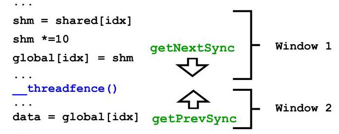
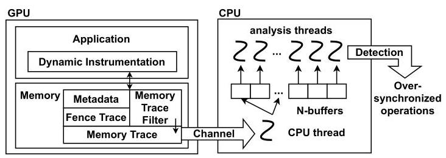
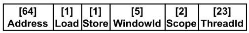
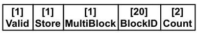
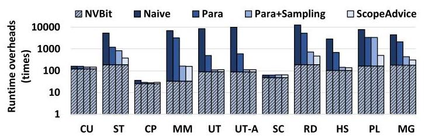

Over-synchronization in GPU Programs
Ajay Nayak
阿杰·纳亚克
Indian Institute of Science
印度科学学院
Bengaluru, India
印度班加罗尔
ajaynayak@iisc.ac.in
ajaynayak@iisc.ac.in
Arkaprava Basu
阿尔卡普拉瓦·巴苏
Indian Institute of Science
印度科学学院
Bengaluru, India
印度班加罗尔
arkapravab@iisc.ac.in
arkapravab@iisc.ac.in
Abstract-The performance of GPU (Graphics Processing Unit)-accelerated functions affects a large spectrum of modern software. Efficiently synchronizing across thousands of concurrent threads is critical to the performance of GPU programs. GPU vendors have introduced advanced programming constructs, e.g., scopes, for efficiently synchronizing within a chosen subset of threads. However, programmers must explicitly employ them, where applicable, to benefit from such features.
摘要—GPU（图形处理单元）加速函数的性能影响着广泛的现代软件。在数千个并发线程之间高效同步对于GPU程序的性能至关重要。GPU厂商已引入高级编程构造（例如作用域），以便在选定的线程子集内高效同步。然而，程序员必须在适用的情况下显式使用这些构造，才能从中受益。
We demonstrate how GPU programs can leave performance on the table by failing to fully harness advanced synchronization features in modern GPUs - leading to over-synchronization. We discover three different variants of over-synchronization observed in real-world applications. We then build a tool, ScopeAdvice, to find cases of over-synchronization in CUDA programs. Avoiding reported over-synchronization improves the performance of several GPU applications by up to 55%.
我们展示了GPU程序因未能充分利用现代GPU中的高级同步特性而损失性能——导致过度同步。我们发现了在实际应用中观察到的三种不同类型的过度同步。随后，我们构建了一个工具ScopeAdvice，用于发现CUDA程序中的过度同步情况。避免所报告的过度同步可将多个GPU应用程序的性能提升高达55%。
Index Terms-GPU, synchronization, performance bugs.
关键词—GPU，同步，性能缺陷。
I. INTRODUCTION
A broad class of today's software, from deep learning, graph processing, and data analytics to scientific computing, rely on GPU's massively parallel computing [1]-[3]. Consequently, the efficiency of GPU programs has an overwhelming bearing on the performance of a large swath of software.
从深度学习、图处理、数据分析到科学计算，当今许多软件都依赖GPU的大规模并行计算能力[1]-[3]。因此，GPU程序的效率对大量软件的性能有着决定性的影响。
GPUs significantly contribute to a server's capital and operational costs. We estimate that \({87}\%\) of the cost of a DGX server with four NVIDIA A100 GPUs is due to the GPUs only [4], [5]. They contribute significantly to the power budget, too [6]. Unfortunately, GPUs are often left under-utilized by the software, significantly but unnecessarily increasing the cost of computing [7]-[11].
GPU 显著增加了服务器的资本支出和运营成本。据我们估算，一台配备四块 NVIDIA A100 GPU 的 DGX 服务器中，仅 GPU 本身即占据 \({87}\%\) 的成本 [4], [5]。它们在功耗预算中也占有很大比重 [6]。遗憾的是，软件往往未能充分利用 GPU，导致其利用率低下，从而显著但不必要地推高了计算成本 [7]-[11]。
To the best of our knowledge, we are the first to demonstrate how sub-optimal synchronization in GPU programs can cause significant performance inefficiency. Many key use cases of GPU, e.g., graph processing, need fine-grain synchronization, e.g., fences. The efficiency of synchronizing across thousands of concurrent GPU threads can significantly affect a GPU program's overall performance. However, GPU's hierarchical programming paradigm and its nuanced synchronization model [12], [13] make writing correct GPU programs with minimal synchronization challenging.
据我们所知，我们是首个证明 GPU 程序中的次优同步如何导致显著性能低效的工作。许多关键的 GPU 应用场景（例如图处理）需要细粒度同步（例如内存屏障）。在数千个并发 GPU 线程间进行同步的效率，会严重影响 GPU 程序的整体性能。然而，GPU 的层次化编程范式及其微妙的同步模型 [12], [13] 使得编写兼具正确性与最小同步开销的 GPU 程序充满挑战。
To keep thousands of concurrent GPU threads tractable, they are organized as groups of up to 1024 threads called a threadblock. Synchronizing across all the threads of a kernel is slow and often unnecessary due to GPU's hierarchical programming paradigm. Programming languages like CUDA and OpenCL support scoped synchronization to write efficiently synchronized code. The scope qualifiers guarantee that the effect of the synchronization is visible only within a subset of threads (i.e., its scope). Those with a narrower scope that synchronizes a smaller subset of threads are faster. For example, on an NVIDIA RTX 3090 GPU, the block-scope fence that guarantees visibility in the issuing thread's threadblock is \({21} \times\) faster than the device-scope fence that ensures visibility across all threads of a kernel.
为使数千个并发的 GPU 线程便于管理，它们被组织成每组最多 1024 个线程的组，称为线程块（threadblock）。由于 GPU 的分层编程范式，跨内核所有线程进行同步既缓慢又常常不必要。CUDA 和 OpenCL 等编程语言支持作用域同步，以便编写高效同步的代码。作用域限定符保证同步的效果仅在线程的一个子集（即其作用域）内可见。具有更窄作用域、同步更小子集线程的同步操作更快。例如，在 NVIDIA RTX 3090 GPU 上，保证在发出线程的线程块内可见的块作用域栅栏比确保跨内核所有线程可见的设备作用域栅栏快 \({21} \times\)。
The default scope in both CUDA and OpenCL is the device scope. Programmers must explicitly use a narrower scope (e.g., block), where applicable, for good performance. However, a data race can manifest if the scope is narrower than needed for synchronizing threads [14]-[16]. Unsurprisingly, programmers often use a wider scope than necessary, prioritizing correctness over performance, even in popular CUDA libraries written by experts (e.g., cuML [17]). A programmer could have used a narrower-scoped operation to improve performance without altering the program's behavior. We call such occurrences over-synchronization.
CUDA 和 OpenCL 中的默认作用域均为设备作用域。为了获得良好性能，程序员必须在合适的情况下显式地使用更窄的作用域（例如，块作用域）。然而，如果作用域比线程同步所需的范围更窄，就可能出现数据竞争 [14]–[16]。因此，即使是在专家编写的流行 CUDA 库中（例如 cuML [17]），程序员也常常会优先保证正确性而非性能，从而使用了超出必要范围的作用域。其实，程序员本可以采用更窄作用域的操作来提升性能，而无需改变程序的行为。我们将这种情况称为过度同步。
We discover three subtle variants of over-synchronization and redundant synchronization in CUDA programs [18] that may leave significant performance on the table. Their subtlety arises from the interaction of CUDA's scoped synchronization model and the GPU micro-architecture.
我们在CUDA程序[18]中发现了三种微妙的过度同步与冗余同步变体，它们可能导致显著的性能损失。其微妙之处源于CUDA的作用域同步模型与GPU微架构之间的相互作用。
First, we find that a fence can have a wider scope than necessary due to the nuanced semantics of related memory operations. Assume that a variable is written to (store) and read from (load) by threads from different threadblocks. It is natural to assume that synchronization (e.g., fence) of device scope is needed after the write and before the read to ensure that the latter observes data produced by the first thread. However, we observe that a narrower-scoped fence will suffice if the instruction performing the read skips the GPU's L1 cache to directly look up the GPU's L2 cache. \({}^{1}\) For example, a load to a variable declared 'volatile' is guaranteed to skip the L1 cache and return the value from the coherent L2 cache or memory (§14.5.3.3 of [18]). Similarly, the memory operations in a device-scoped atomic read-modify-write instruction also skip the L1 cache. In such scenarios, the fence is needed only to ensure ordering amongst the loads/stores and not for ensuring visibility of updates across threadblocks. As a fence of any scope guarantees ordering, using a narrower-scoped fence, e.g., a block-scoped fence, before reading the variable, would have preserved the program semantics (Section III-1).
首先，我们发现内存屏障的作用域可能超出必要范围，原因在于相关内存操作的细微语义。假设一个变量由来自不同线程块的线程分别执行写入（存储）和读取（加载）操作。很自然地，人们会认为需要在写入之后、读取之前使用设备作用域的内存屏障，以确保后者能观察到第一个线程产生的数据。然而，我们观察到，如果执行读取操作的指令跳过 GPU 的一级缓存，直接查找 GPU 的二级缓存，那么使用作用域更窄的内存屏障就足够了。\({}^{1}\) 例如，对声明为 'volatile' 的变量进行加载，保证会跳过一级缓存，并从一致性的二级缓存或内存中返回值（[18]的 §14.5.3.3）。类似地，设备作用域的原子读-修改-写指令中的内存操作也会跳过一级缓存。在此类情形下，内存屏障仅需确保加载/存储操作之间的顺序，而无需保证更新在不同线程块间的可见性。由于任何作用域的内存屏障都保证顺序，在读取变量之前使用作用域更窄的内存屏障，例如线程块作用域的内存屏障，本可以保持程序语义（第 III-1 节）。
\({}^{1}\) Unlike CPUs, GPU hardware, by design, eschews cache coherence for its L1 caches to avoid overheads of maintaining coherence across thousands of concurrent loads/stores. The L2 cache, however, is coherent.
\({}^{1}\) 与 CPU 不同，GPU 硬件在设计上避免为其 L1 缓存提供缓存一致性，以避免在数千个并发加载/存储操作中维护一致性的开销。然而，L2 缓存是一致性的。
In another incarnation of over-synchronization, a fence could be entirely redundant. We notice that the threadblock barrier in CUDA (__syncthreads) encompasses the semantics of a block-scoped fence beyond acting as an execution barrier across threads in a threadblock. Thus, using a block-scoped fence immediately following a barrier is redundant. Finally, we notice that common lock/unlock routines may unnecessarily synchronize across all threads of a kernel, even when the communicating threads fall within the same threadblock.
在另一种过度同步形式中，某个栅栏可能是完全冗余的。我们注意到，CUDA中的线程块屏障（__syncthreads）除了充当线程块内各线程的执行屏障外，还包含了块作用域栅栏的语义。因此，紧跟在屏障之后使用块作用域栅栏是多余的。最后，我们注意到常见的加锁/解锁例程可能会在内核的所有线程之间进行不必要的同步，即使通信线程同属一个线程块也是如此。
We find evidence of these variants of over-synchronizations across popular GPU-accelerated libraries and open-source programs, including cuML [17], cudpp [19], cuBLAS [20], and gpufilter [21]. In each case, modifying only three lines of code on average, i.e., either by changing a fence's scope or removing one, improves the performance by up to 55% without affecting program behavior.
我们在多个流行的 GPU 加速库和开源程序中发现了这些过度同步变体的证据，包括 cuML [17]、cudpp [19]、cuBLAS [20] 和 gpufilter [21]。在每种情况下，平均仅修改三行代码，即要么改变栅栏的作用域，要么移除一个栅栏，就能将性能提升高达 55%，且不影响程序行为。
We demonstrate how removing these over-synchronizations retains the original program's semantics. NVIDIA publishes only a programming optimization guide for CUDA but does not formally specify its memory consistency model. However, it formally specifies the memory model for PTX [22]. All programs written in CUDA code are lowered to PTX. We demonstrate that the removal of over-synchronizations is also valid against the formal PTX memory consistency model.
我们展示了移除这些过度同步如何保留原始程序的语义。NVIDIA 仅为 CUDA 发布了编程优化指南，并未正式规定其内存一致性模型，但正式规定了 PTX 的内存模型 [22]。所有用 CUDA 代码编写的程序都会被降级为 PTX。我们证明，针对正式的 PTX 内存一致性模型，移除过度同步同样有效。
Unfortunately, given the subtleties of these over-synchronizations, it could be challenging to manually notice these, as evidenced by their existence in libraries written by experts. Our final contribution thus is ScopeAdvice, a tool that detects over-synchronization in CUDA programs. It uses NVIDIA's NVBit library [23] to trace a kernel's execution and gather relevant memory access and synchronization traces for analysis. ScopeAdvice reports the line number, source file, and the type of over-synchronization (if present). Given concrete, actionable advice, the programmer can enhance their code to improve performance.
遗憾的是，由于这些过度同步的微妙之处，手动发现它们可能颇具挑战性，它们存在于专家编写的库中便证明了这一点。因此，我们的最后一项贡献是ScopeAdvice，一个检测CUDA程序中过度同步的工具。它使用NVIDIA的NVBit库[23]来跟踪内核的执行情况，并收集相关的内存访问和同步跟踪信息以供分析。ScopeAdvice会报告行号、源文件以及（若存在）过度同步的类型。依据这些具体且可操作的建议，程序员可以改进其代码以提升性能。
Beyond its usefulness to existing programs, ScopeAdvice eases programming too. Scoped synchronization significantly burdens programmers [24], [25]. With ScopeAdvice, programmers can first focus on functional correctness while writing new programs, possibly with over-synchronization, and then use ScopeAdvice to find optimization opportunities.
除了对现有程序的实用性，ScopeAdvice 还简化了编程工作。作用域同步给程序员带来了显著的负担[24]，[25]。借助 ScopeAdvice，程序员在编写新程序时可以首先专注于功能正确性，即使存在过度同步，然后再利用 ScopeAdvice 寻找优化机会。
Over-synchronizations will likely become more prevalent as GPU vendors continue to introduce newer levels in the programming hierarchy and, thus, newer synchronization scopes. For example, in Hopper GPUs, NVIDIA introduced a new level in the hierarchy called a cluster, encompassing up to eight threadblocks sharing a memory region (§2.2.1 of [18]). The associated new synchronization scopes further increase the possibility of introducing over-synchronizations.
随着GPU供应商不断在编程层次结构中引入新的级别，因而引入新的同步范围，过度同步很可能会变得更加普遍。例如，在Hopper GPU中，NVIDIA引入了一个称为集群的新层次级别，它包含最多八个共享内存区域的线程块（[18]的§2.2.1节）。相关联的新的同步范围进一步增加了引入过度同步的可能性。
In summary, we make the following contributions.
综上所述，我们的贡献如下。
- We are the first to report sub-optimal performance of GPU programs due to over-synchronization. We find three variants of over-synchronization.
我们是首个指出因过度同步而导致 GPU 程序性能欠佳的团队。我们发现了三种形式的过度同步。
- We demonstrate that removing over-synchronization from CUDA programs does not alter the program's semantics.
- 我们证明，从 CUDA 程序中移除过度同步不会改变程序的语义。
- We built a runtime tool, ScopeAdvice, to detect and report suspected cases of over-synchronization to the programmer. Following the tool's advice, programs sped up by up to 55%.
- 我们构建了一个运行时工具 ScopeAdvice，用于检测并向程序员报告疑似过度同步的情况。遵循该工具的建议后，程序速度最高可提升 55%。
II. BACKGROUND
GPU hierarchy: GPUs arrange thousands of concurrent threads in a hierarchy. The top of the hardware hierarchy consists of Streaming Multiprocessors (SM). Each SM sports multiple Single-Instruction-Multiple-Data (SIMD) units further divided into execution lanes. All SIMD units in an SM share a private L1 cache and scratchpad (shared memory). All the SMs share a larger L2 cache. The GPU's global memory (on-board device memory) is accessible to all GPU threads. The hardware caches contents of global memory in L1 and L2 caches. GPU hardware does not keep its L1 cache contents coherent to avoid excessive overheads across hundreds of SMs. However, L2 cache contents are always coherent.
GPU层次结构：GPU将数千个并发线程组织成一个层次结构。硬件层次结构的顶层由流多处理器（SM）组成。每个SM包含多个单指令多数据（SIMD）单元，这些单元又被进一步划分为执行通道。一个SM中的所有SIMD单元共享一个私有的L1缓存和暂存器（共享内存）。所有SM共享一个更大的L2缓存。GPU的全局内存（板载设备内存）对所有GPU线程都是可访问的。硬件会将全局内存的内容缓存到L1和L2缓存中。为了避免在数百个SM之间产生过高的开销，GPU硬件并不保持其L1缓存内容的一致性。然而，L2缓存内容始终是一致的。
In the software hierarchy, the smallest execution unit is a thread mapped to an execution lane in a SIMD unit. A group of threads (typically 32) forms a warp, the smallest hardware-scheduled unit of work that executes on SIMD units. A block (threadblock) is a group of warps that executes on the same SM. Threads in a threadblock can communicate amongst themselves via scratchpad. Finally, a grid comprises all the threadblocks used for executing a GPU kernel.
在软件层次结构中，最小的执行单元是映射到 SIMD 单元中一条执行通道的线程。一组线程（通常 32 个）形成一个线程束（warp），它是在 SIMD 单元上执行的最小硬件调度工作单元。一个线程块（block）是一组在同一 SM 上执行的线程束。线程块中的线程可以通过 scratchpad 相互通信。最后，一个网格（grid）包含执行 GPU 内核所需的所有线程块。
Scoped Operations on GPUs: Global synchronization across all the threads on a GPU is often unnecessary. Since the execution is naturally divided into threadblocks, synchronization within a threadblock is often sufficient. NVIDIA, AMD provides a programming construct called scopes that enables specifying the subset of the threads that should synchronize.
GPU 上的作用域操作：在整个 GPU 的所有线程之间进行全局同步通常是不必要的。由于执行自然地划分为线程块，线程块内的同步通常就足够了。NVIDIA 和 AMD 提供了一种称为作用域（scopes）的编程结构，允许指定应该同步的线程子集。
CUDA supports scope qualifiers for fence and atomic operations. Fences in CUDA provide both ordering and visibility guarantees. A fence of any scope ensures that memory instructions in the issuing thread cannot be reordered across the fence. The scope qualifier of the fence ensures the visibility of operations across a subset of threads. For example, a block-scoped fence (__threadfence_block) guarantees that all writes by the issuing thread are made visible to all the threads in its threadblock. In contrast, a device-scoped fence (___threadfence, default) must ensure that the writes before it are visible across all the threadblocks. This requires flushing dirty cache lines from the private, incoherent L1 cache to the coherent L2. The device scope must ensure that the reads after the fence get the data from the L2 cache, which requires invalidating the L1 cache contents. In comparison, a block-scoped fence must ensure visibility only within a threadblock. It does not require flushing or invalidating L1 cache contents since all threads in a threadblock share the same L1 cache. The system scope ensures visibility across all GPUs (multi-GPU system) and CPU threads. We focus on execution on a single GPU and, thus, limit our discussion on block and device scopes.
CUDA 为栅栏和原子操作提供了作用域限定符。CUDA 中的栅栏同时提供排序和可见性保证。任何作用域的栅栏都会确保发起线程中的内存指令不能跨栅栏重排序。栅栏的作用域限定符确保了操作在一组线程子集中的可见性。例如，块作用域栅栏（
__threadfence_block）保证发起线程的所有写入对其线程块内的所有线程可见。相比之下，设备作用域栅栏（___threadfence，默认）必须确保其之前的写入对所有线程块均可见。这需要将脏缓存行从私有的、非一致性的 L1 缓存刷新到一致性 L2 缓存。设备作用域必须确保栅栏之后的读取从 L2 缓存获取数据，而这需要使 L1 缓存内容无效化。相较而言，块作用域栅栏仅需确保在线程块内可见，由于线程块内所有线程共享同一 L1 缓存，因此无需刷新或使 L1 缓存内容无效化。系统作用域确保跨所有 GPU（多 GPU 系统）和 CPU 线程的可见性。我们专注于单 GPU 上的执行，因此将讨论限制在块作用域和设备作用域。
Atomic read-modify-write (RMW) instructions can also be qualified with scopes. Block-scoped atomics ensure visibility across all threads within a threadblock. Since threads in a threadblock share an L1 cache, block-scoped atomics can be completed in the L1 cache. A device-scoped atomic ensures visibility across all threadblocks. Thus, it must skip the L1 cache and read from/write to the coherent L2 cache shared by all the threads of a kernel (§8.4.1 of [12]). Further, atomics in CUDA follow relaxed semantics, i.e., loads/stores can bypass atomics (§7.14 of [18]). Hence, lock/unlock routines in CUDA are implemented as a combination of an atomic and a fence.
原子读-修改-写（RMW）指令也可以用作用域来限定。块作用域原子操作确保线程块内所有线程的可见性。由于线程块中的线程共享 L1 缓存，块作用域原子操作可以在 L1 缓存中完成。设备作用域原子操作确保跨所有线程块的可见性。因此，它必须跳过 L1 缓存，并从内核所有线程共享的一致 L2 缓存中读取或向其写入（文献[12]的 §8.4.1）。此外，CUDA 中的原子操作遵循宽松语义，即加载/存储可以绕过原子操作（文献[18]的 §7.14）。因此，CUDA 中的锁定/解锁例程被实现为原子操作和栅栏的组合。
(global) volatile flags; (global) sum, *status;
(global) volatile flags; (global) sum, *status;
volatile Flags *mFlag = flags + blockIdx.x;
volatile Flags *mFlag = flags + blockIdx.x;
mFlag->sum = SUM;
mFlag->sum = SUM;
___threadfence();
本文针对 GPU 程序中存在的次优同步问题，即“过度同步”，指程序员使用了作用范围超出实际需求的栅栏，虽保证正确性，却损害了性能。主要研究问题是识别并消除此类过度同步，以提升 GPU 程序的效率。
其核心贡献在于发现了三种过度同步的变体：（1）当涉及的内存访问跳过 L1 缓存时（例如 volatile 变量或设备级原子操作），可将设备级栅栏替换为块级栅栏，因为更窄的栅栏已足以保证顺序；（2）紧邻线程块屏障（__syncthreads）的冗余栅栏，因为屏障本身已提供块级可见性与顺序；（3）在线程块内部的锁/解锁例程中不必要地使用设备级栅栏，此时块级栅栏即已足够。为自动检测这些模式，作者构建了 ScopeAdvice，一个动态分析工具，通过 NVBit 插桩 CUDA 内核，收集内存访问轨迹和栅栏执行数据，并基于内存访问模式与线程块归属应用规则。该工具的建议已对照 NVIDIA 的正式 PTX 内存模型进行了验证。
主要结论表明，过度同步广泛存在于现实世界的 GPU 库（如 cuML、cudpp、cuBLAS 等）。根据 ScopeAdvice 建议移除这些冗余同步后，性能提升可达 55%，同时栅栏导致的停顿周期显著减少。ScopeAdvice 在经过多线程、采样和轨迹过滤等优化后，其自身的运行时开销可控制在可接受范围（如 29–522 倍减速），且在所有评估内核中均未报告误报。这项工作揭示，程序员可先致力于保证正确性，再借助 ScopeAdvice 等工具优化同步作用域，并且此类低效问题可能随着新的 GPU 层级结构出现而愈发严重。
mFlag->status = 1;
mFlag->status = 1;
...
...
volatile Flags *sFlag = flags + (blockIdx.x - 1);
volatile Flags *sFlag = flags + (blockIdx.x - 1);
while (sFlag->status == 0);
while (sFlag->status == 0);
_threadfence(); // _block() is sufficient
_threadfence(); // _block() 就足够了
accumulate += sFlag->sum;
accumulate += sFlag->sum;
(a) In the presence of volatile variables.
（a）存在 volatile 变量时。
oldVal = atomicAdd(sum, SUM);
oldVal = atomicAdd(sum, SUM);
___threadfence(); // _block() is sufficient
___threadfence(); // _block() 就足够了。
atomicExch(status, 1);
atomicExch(status, 1);
...
本文关注 GPU 程序中的一种次优同步问题，称为“过度同步”（over-synchronization），即程序员使用了比必要范围更宽的栅栏（fence），在保持正确性的同时损害了性能。主要的科学问题在于识别和消除这类过度同步，以提升 GPU 程序的效率。
核心贡献在于发现了三种过度同步的变体：(1) 当涉及的内存访问绕过 L1 缓存时（例如 volatile 变量或设备范围的原子操作），设备范围栅栏可以被块范围栅栏替代，因为较窄的栅栏足以保证排序；(2) 紧邻线程块屏障（__syncthreads）的冗余栅栏，因为屏障本身已经提供了块范围的可见性与排序；(3) 在线程块内部的加锁/解锁例程中不必要的设备范围栅栏，此时块范围已足够。为自动检测这些模式，作者构建了 ScopeAdvice，一种动态分析工具，通过 NVBit 对 CUDA 内核进行插桩，收集内存访问轨迹和栅栏执行数据，并基于内存访问模式与线程块隶属关系应用规则。该工具的建议经过 NVIDIA 形式化 PTX 内存模型的验证。
主要结论表明，过度同步存在于实际 GPU 库中（如 cuML、cudpp、cuBLAS 等）。根据 ScopeAdvice 的建议消除这些过度同步后，性能提升可达 55%，且因栅栏导致的停滞周期显著减少。经过多线程、采样和轨迹过滤等优化后，ScopeAdvice 本身带来的运行时开销处于可控范围（例如 29–522 倍减速），并且在所有评估的内核中没有报告假阳性。这项工作强调，程序员可以先专注于正确性，然后使用 ScopeAdvice 等工具来优化同步范围，并且随着 GPU 层次结构新增层级，这类低效问题可能会愈发显著。
while (!atomicCAS(status, 1, 0));
while (!atomicCAS(status, 1, 0));
___threadfence(); // _block() is sufficient
___threadfence(); // _block() 就足够了
accumulate += atomicAdd(sum, 0);
accumulate += atomicAdd(sum, 0);
(b) In the presence of device-scoped atomic RMWs.
(b) 当存在设备作用域的原子RMW时。
Fig. 1: Over-synchronization due to accesses skipping L1$.
图1：由于访问跳过L1$导致的过度同步
CUDA also provides barrier (__syncthreads) instruction that ensures all threads of issuing thread's threadblock reach the barrier before proceeding further. It encompasses the semantics of a ___threadfence_block - writes by any thread of a threadblock before the barrier is visible to all threads in that threadblock after the barrier.
CUDA 还提供了屏障（__syncthreads）指令，确保发出线程所在线程块的所有线程都到达屏障后才能继续执行。它包含了 ___threadfence_block 的语义——线程块中任意线程在屏障前的写入，在屏障后对该线程块内的所有线程可见。
Impact of volatile keyword: The volatile qualifier for variables in CUDA impacts their visibility. Access to volatile variables skips the L1 cache and returns data from the GPU's L2 cache (§14.5.3.3 of [18]). Consequently, a block-scoped fence is sufficient to order reads of two volatile variables even when threads from different threadblocks access them.
volatile 关键字的影响：CUDA 中变量的 volatile 限定符会影响其可见性。对 volatile 变量的访问会绕过 L1 缓存，直接从 GPU 的 L2 缓存返回数据（[18] 的 §14.5.3.3）。因此，即使来自不同线程块的线程访问两个 volatile 变量，块作用域栅栏也足以对它们的读取进行排序。
III. OVER-SYNCHRONIZATION IN GPU PROGRAMS
Programmers may use a wider scope in fences than needed or add a redundant fence to be safe from introducing data races [15], [16]. We call this over-synchronization, i.e., occurrences where using a narrower scoped fence would not have introduced a data race (bug) and preserved the program's behavior. A program's behavior is preserved by ensuring that all store-to-load relations remain unaltered, i.e., the stores whose output a load can return are the same in the original program and its version without over-synchronization.
程序员可能会在栅栏中使用比所需更宽的范围，或添加冗余栅栏以确保不引入数据竞争 [15], [16]。我们将此称为过度同步，即使用较窄范围的栅栏本不会引入数据竞争（程序错误）且能保持程序行为的情形。程序的正确行为需通过确保所有存储-加载关系保持不变来保证，也就是说，在原始程序及其去除过度同步的版本中，能够返回某个加载结果的存储操作是相同的。
We analyze open-source CUDA programs and libraries to investigate how over-synchronization occurs in practice. We find three distinct variants of over-synchronization. This analysis leads to understanding code constructs that cause it and drives the tool's design to detect over-synchronization.
我们分析开源 CUDA 程序与库，以研究过度同步在实践中的发生方式。我们发现了三种不同的过度同步变体。这一分析有助于理解导致过度同步的代码结构，并驱动了检测过度同步的工具设计。
1) Variant 1: Programmers assume that they must use device-scoped fences when communicating across threads from different threadblocks. While generally true, a block-scoped fence is enough if the instruction reading the shared variable skips the L1 cache to directly access the L2 cache/memory. This observation holds because the visibility of updates by threads across threadblocks, i.e., values read, is guaranteed by such instructions. Thus, the fence is necessary to ensure only the ordering among memory operations in the issuing thread. Since all fences, including the narrowest scope, ensure ordering, a wider-scoped one is unnecessary. We find that such over-synchronizations can manifest in two ways based on how the shared variable is read. We use producer-consumer constructs to describe these cases.
1) 变体1：当跨不同线程块进行线程通信时，程序员假定必须使用设备范围栅栏。虽然这一般是对的，但如果读取共享变量的指令跳过了L1缓存而直接访问L2缓存/内存，那么块范围栅栏就已足够。该观察成立的原因是，此类指令能保证跨线程块线程对更新（即读取的值）的可见性。因此，栅栏仅需确保发出栅栏的线程中内存操作的排序。由于所有栅栏（包括最窄范围的）都能确保排序，更大范围的栅栏便无必要。我们发现，根据共享变量的读取方式，这种过度同步可能以两种形式出现。我们使用生产者-消费者构造来描述这些情况。
In the presence of volatile variables: Consider a simplified snippet (Figure 1a) from the 'decoupledLookback' kernel in cuML [17]. A thread updates the variable sum, followed by a device-scoped fence in lines 2-3. In line 4, the thread updates status, indicating that the updated sum is available. The fence in line 3 is needed to ensure that status is updated after making the updated sum visible to all threads. A thread from another threadblock waits for the status to be updated and then reads the updated sum (lines 7-9).
在易变变量存在的情况下：考虑 cuML [17] 中 “decoupledLookback” 内核的一个简化代码片段（图1a）。一个线程更新变量 sum，随后在第2-3行执行一个设备作用域栅栏。在第4行，线程更新 status，表明更新后的 sum 已可用。第3行的栅栏是必要的，它确保在将更新后的 sum 对所有线程可见之后，才更新 status。来自另一线程块的线程会等待 status 更新，然后读取更新后的 sum（第7-9行）。
The device-scoped fence in line 8 seems necessary as the threads accessing sum are from different threadblocks. However, mFlag and sFlag are declared volatile. Note that declaring a pointer to a struct type as volatile (here, mFlag and sFlag) means that the pointer points to a volatile structure. This implies that the entire structure is to be treated as volatile. The loads to volatile variables (status and flag members in the Flags struct type) skip the L1 cache to read the latest value from the coherent L2 cache (§7.5 of [18]). This ensures the visibility of updates made by threads across threadblocks (§14.5.3.3 of [18]). Thus, threads always read the latest values of sum. The fence in line 8 is needed only for ordering the reads of status (line 7) and sum (line 9). Thus, the narrowest scoped fence (here, block-scope) is sufficient.
第8行的设备作用域栅栏看似必要，因为访问
sum的线程来自不同线程块。然而，mFlag和sFlag被声明为volatile。注意，将指向结构体类型的指针声明为volatile（此处为mFlag和sFlag）意味着该指针指向一个volatile结构体，这表示整个结构体都应被视为volatile。对volatile变量的加载（此处为Flags结构体类型中的status和flag成员）将绕过L1缓存，以便从一致性的L2缓存中读取最新值（[18]第7.5节）。这确保了跨线程块的线程所做更新的可见性（[18]第14.5.3.3节）。因此，线程始终能读到sum的最新值。第8行的栅栏仅需用于对status（第7行）和sum（第9行）的读取进行定序。因此，作用域最窄的栅栏（此处为块作用域）即已足够。
In the presence of device-scoped atomic RMWs: The memory operations (read/write) of a device-scoped atomic RMW behave similarly to those of a volatile variable - skip the L1 cache to access the latest data from the L2 cache. Thus, an accompanying fence is needed only for ordering.
在存在设备范围原子 RMW 的情况下：设备范围原子 RMW 的内存操作（读/写）行为与易失性变量类似——跳过 L1 缓存，直接从 L2 缓存访问最新数据。因此，只需一个伴随的栅栏来保证顺序。
Consider the code snippet in Figure 1b. A thread updates the variable sum using a device-scoped atomicAdd, followed by a device-scoped fence in lines 1-2. In line 3, the thread updates the variable status using a device-scoped atomicExch, indicating that the updated data is visible to all threads. A thread from another threadblock waits for the status to be updated and then reads the sum (lines 5-7) using device-scoped atomicCAS and atomicAdd, respectively.
考虑图1b中的代码片段。一个线程使用设备作用域的 atomicAdd 更新变量 sum，随后在第1-2行使用设备作用域的 fence。在第3行，该线程使用设备作用域的 atomicExch 更新变量 status，表明更新后的数据对所有线程可见。来自另一个线程块的线程等待 status 被更新，然后分别在第5-7行使用设备作用域的 atomicCAS 和 atomicAdd 读取 sum。
The device-scoped fences in lines 2 and 6 seem necessary as the threads accessing data are from different threadblocks. However, the snippet uses device-scoped atomic RMWs, ensuring that all threads observe the latest value. The fences in lines 2 and 6 are needed only for ordering the atomics in lines 1, 3, and lines 5, 7, respectively. The atomicity guarantee requires that once the read to an atomic variable completes, there cannot be any intervening access before the write part of the atomic. Therefore, ensuring that the reads of atomic RMWs are ordered guarantees the ordering of atomics. The block-scoped fences are sufficient to ensure this.
第2行和第6行的设备范围栅栏看似必要，因访问数据的线程来自不同线程块。然而，该代码片段使用了设备范围的原子读-改-写操作，确保所有线程都能观察到最新值。第2行和第6行的栅栏仅需分别用于对第1、3行及第5、7行的原子操作进行排序。原子性保证要求：一旦对原子变量的读取完成，在原子操作的写入部分之前不能有任何中间访问。因此，确保原子读-改-写操作的读取有序即可保证原子操作的有序性。块范围栅栏足以实现这一保证。
(stack) saveValue, Aval; (shared) *addressPad
(stack) saveValue, Aval; (shared) *addressPad
...
本文探讨了 GPU 程序中一种称为“过度同步”的次优同步现象，即程序员使用了作用域超出实际需求的栅栏，虽然程序正确性得以保持，但性能受损。主要研究问题是如何识别并消除此类过度同步，以提升 GPU 程序效率。
核心贡献在于发现了三种过度同步的变体：（1）当涉及的内存访问会绕过 L1 缓存（例如 volatile 变量或设备作用域的原子操作）时，可将设备作用域的栅栏替换为块作用域栅栏，因为更窄的作用域栅栏已足以保证访问顺序；（2）紧邻线程块屏障（__syncthreads）的冗余栅栏，因为屏障本身已提供块作用域内的可见性和顺序保证；（3）在线程块内部的加锁/解锁例程中不必要地使用了设备作用域的栅栏，实际上块作用域即可满足需求。为了自动检测这些模式，作者构建了动态分析工具 ScopeAdvice，它借助 NVBit 插桩 CUDA 内核，收集内存访问轨迹和栅栏执行数据，并基于内存访问模式与线程块隶属关系运用推断规则。该工具给出的建议均通过 NVIDIA 正式 PTX 内存模型进行验证。
主要结论表明，过度同步现象普遍存在于真实的 GPU 程序库（如 cuML、cudpp、cuBLAS 等）中。根据 ScopeAdvice 的建议去除这些过度同步后，性能最高提升 55%，且因栅栏导致的停顿周期显著减少。ScopeAdvice 本身在采用多线程、采样与轨迹过滤等优化后，运行时开销处于可控范围（例如 29–522 倍的减速），并且在所有评估的内核中均未出现误报。这项工作表明，程序员可以首先专注于正确性，然后借助 ScopeAdvice 等工具优化同步作用域，同时也指出，随着 GPU 层级结构的不断丰富，这类低效问题可能愈发突出。
for (i = 0; i < 8; i++)
for (i = 0; i < 8; i++)
saveValue[i] = addressPad[tid*depth+i];
saveValue[i] = addressPad[tid*depth+i];
_threadfence(); // redundant
_threadfence(); // 冗余的
syncthreads();
syncthreads();
for (i = 0; i < 8; i++)
for (i = 0; i < 8; i++)
addressPad[Aval[i]] = saveValue[i];
addressPad[Aval[i]] = saveValue[i];
...
本文探讨了 GPU 程序中的一种次优同步现象，称为“过度同步”，即程序员使用了比所需范围更广的屏障，虽保持了正确性却损害了性能。主要研究问题是如何识别并消除这类过度同步，以提升 GPU 程序效率。
主要贡献在于发现了三种类型的过度同步：（1）当涉及的内存访问跳过 L1 缓存时（例如易变变量或设备作用域原子操作），可将设备作用域屏障替换为线程块作用域屏障，因为较窄的屏障就足以保证顺序；（2）紧邻线程块屏障（__syncthreads）的冗余屏障，因为该屏障已提供了线程块作用域的可见性和顺序；（3）线程块内部锁/解锁例程中不必要的设备作用域屏障，此时线程块作用域就足够了。为自动检测这些模式，作者开发了 ScopeAdvice，这是一款动态分析工具，通过 NVBit 对 CUDA 内核进行插桩，收集内存访问轨迹和屏障执行数据，并根据内存访问模式及线程块成员关系应用规则。该工具的建议依据 NVIDIA 的 PTX 形式化内存模型进行了验证。
主要结论表明，过度同步存在于现实世界的 GPU 库（如 cuML、cudpp、cuBLAS 等）中。根据 ScopeAdvice 的建议去除这些过度同步后，性能提升最高可达 55%，屏障导致的停滞周期显著减少。ScopeAdvice 本身在采用多线程、采样和轨迹过滤等优化后，会产生可接受的运行时开销（例如 29–522 倍的减速），且在所有评估内核中均未报告误报。这项工作强调，程序员可先专注于正确性，再使用 ScopeAdvice 等工具来优化同步作用域，同时这类效率问题可能会随着 GPU 层次结构的增加而加剧。
Fig. 2: Redundant fence due to barrier.
图2：因屏障导致的冗余栅栏。
// implementing lock acquire
// 实现锁的获取
while(atomicCAS(lock, 0, 1) != 0);
while(atomicCAS(lock, 0, 1) != 0);
__threadfence(); // _block() for intra-threadblock lock
__threadfence(); // _block() 用于线程块内锁
// implementing lock release
// 实现锁释放
___threadfence(); // _block() for intra-threadblock lock
___threadfence(); // _block() 用于线程块内锁
atomicExch(lock, 0);
atomicExch(lock, 0);
Fig. 3: Over-synchronized intra-threadblock locking.
图 3：过度同步的线程块内锁定。
2) Variant 2: In CUDA, barriers implicitly contain the semantics of a block-scoped fence (§7.6 of [18]). Besides ensuring that threads in a threadblock reach the barrier, it guarantees that writes before the barrier are visible to reads from threads in that threadblock after the barrier. Thus, a block-scoped fence immediately neighboring a barrier is redundant.
2) 变体2：在CUDA中，栅栏隐式地包含了块作用域屏障的语义（文献[18]§7.6）。除了确保线程块内的线程抵达屏障点之外，它还保证屏障之前的写操作对屏障之后该线程块内线程的读操作可见。因此，紧邻屏障的块作用域屏障是多余的。
Figure 2 shows a code snippet from the sort application in the cudpp library [19]. A thread reads from addressPad in the shared address space (scratchpad) and writes to the local variable saveValue (registers or thread-local memory). This is followed by a device-scoped fence and a barrier. Next, saveValue is written back to addressPad, depending on the content of Aval. Note the double indirection in the accesses to addressPad in lines 3 and 7. The barrier (line 5) ensures that the read in line 3 can race with the write in line 7.
图2展示了cudpp库[19]中排序应用的一个代码片段。一个线程从共享地址空间（暂存器）中的addressPad读取，并写入局部变量saveValue（寄存器或线程局部内存）。随后是一个设备作用域栅栏和一个屏障。接下来，根据Aval的内容，saveValue被写回addressPad。注意第3行和第7行中对addressPad的访问存在双重间接寻址。屏障（第5行）确保第3行的读取可以与第7行的写入发生竞争。
It would seem that the programmers intended to guarantee ordering using a device-scoped fence on line 4. However, a block-scoped fence would suffice since threads within a threadblock are communicating via the scratchpad. Notably, the barrier (line 5) immediately following the over-synchronized device-scoped fence (line 4) makes the fence redundant. Therefore, removing the fence does not alter the program's behavior or introduce race.
程序员似乎打算在第4行使用设备作用域栅栏来确保排序。然而，由于线程块内的线程通过便签式存储器进行通信，使用块作用域栅栏就足够了。值得注意的是，紧接在过度同步的设备作用域栅栏（第4行）之后的屏障（第5行）使得该栅栏变得多余。因此，移除该栅栏不会改变程序的行为或引入竞争。
3) Variant 3: Applications often use lock (acquire) and unlock (release) routines for synchronization. In CUDA, these routines are implemented with a sequence of fences and atomics [13], [26], [27]. While synchronizing among threads from different threadblocks necessitates device-scoped operations, block-scope is sufficient if the communicating threads belong to a threadblock. Using the same routine for lock or unlock makes them over-synchronized when communicating threads do not straddle threadblocks.
3) 变体 3：应用程序常使用 lock (acquire) 和 unlock (release) 例程进行同步。在 CUDA 中，这些例程通过一连串的栅栏和原子操作实现 [13], [26], [27]。虽然来自不同线程块的线程间同步需要设备范围的（device-scoped）操作，但如果通信线程属于同一线程块，则块范围（block-scope）就足够了。当通信线程不横跨线程块时，使用相同的 lock 或 unlock 例程会导致这些操作过度同步。
Figure 3 shows a typical code snippet implementing acquire-release for fine-grain locking. For better performance, one must use different scoped operations based on the communicating threads. A block-scoped fence in Figure 3 would have ensured the ordering and visibility of memory operations inside the acquire-release critical section amongst threads within a threadblock (§7.5 of [18]). Thus, fences in lines 3 and 6 are over-synchronized.
图 3 展示了一段典型的用于细粒度锁的获取-释放代码片段。为了获得更好的性能，必须根据通信线程使用不同作用域的操作。图 3 中的块作用域栅栏本可以确保获取-释放临界区内内存操作的顺序和可见性，仅在线程块内的线程间生效（[18] 第 7.5 节）。因此，第 3 行和第 6 行中的栅栏属于过度同步。
IV. VALIDATION AGAINST PTX MEMORY MODEL
Section III reports over-synchronization as per the CUDA programming guide. However, CUDA does not formally specify a memory model. Instead, NVIDIA has a formally specified memory model for PTX [12], [22]. PTX is a virtual instruction set for NVIDIA GPUs. CUDA programs are first lowered to the PTX, which is then lowered to SASS or binary that runs on the GPU. It is natural to wonder if our proposed optimizations of removing over-synchronization are valid as per the PTX memory model. Removal of an over-synchronization is valid if it: ① does not introduce data races, and ② preserves the original program behavior. The program's behavior is preserved if a load can return only the values generated by the same set of stores as in the original program.
第三节根据CUDA编程指南报告了过度同步。然而，CUDA并没有正式指定内存模型。相反，NVIDIA为PTX提供了一个正式指定的内存模型[12], [22]。PTX是NVIDIA GPU的虚拟指令集。CUDA程序首先被降低到PTX，然后再降低到SASS或直接在GPU上运行的二进制代码。人们自然会想知道，根据PTX内存模型，我们提出的移除过度同步的优化是否有效。移除过度同步是有效的，如果它：① 不引入数据竞争，并且② 保留原始程序行为。如果加载只能返回与原程序中相同的一组存储生成的值，则程序行为得以保留。
Relevant background on PTX memory model: CUDA can be easily mapped to the PTX instructions. Accesses to volatile variables in CUDA are suffixed with '.volatile' in PTX. Atomics are prefixed with 'atom' and specify scope as a substring, i.e., '.cta,'.gpu,' and '.sys' for block, device, and system scopes, respectively. A __threadfence is lowered to a membar instruction suffixed with its scope. The barrier (__syncthreads) is lowered to bar.sync. We describe a few definitions from the PTX memory model that are relevant to our discussion:
PTX 内存模型相关背景：CUDA 可被轻松映射为 PTX 指令。CUDA 中对 volatile 变量的访问在 PTX 中带有 '.volatile' 后缀。原子操作以 'atom' 为前缀，并通过子字符串指定作用域，即，'.cta,'.gpu,' 和 '.sys' 分别对应块、设备和系统作用域。__threadfence 映射为一个带其作用域后缀的 membar 指令。屏障（__syncthreads）映射为 bar.sync。我们描述一些与本文讨论相关的 PTX 内存模型定义：
- Morally strong memory operations (§8.6 of [12]). Memory operations from different threads are defined as morally strong when: ① they are performed on the same address, and ② they have a scope that includes the involved threads. For example, a read and a write from threads of different threadblocks are morally strong if they are performed on the same address and the operations are device or system-scoped.
- 道德强内存操作（[12] 的 §8.6）。当来自不同线程的内存操作满足以下条件时，被定义为道德强操作：① 它们对同一地址执行，并且② 它们的作用域包含涉及的线程。例如，来自不同线程块的读和写操作如果对同一地址执行且操作是设备或系统作用域的，则它们是道德强操作。
- Data races (§8.6.1 of [12]). The PTX model defines a data race as a set of conflicting operations, with at least one write, which are not morally strong and are not ordered.
- 数据竞争（[12]的§8.6.1）。PTX模型将数据竞争定义为一组冲突操作，其中至少有一个写操作，这些操作既不具备道德强序，也未排序。
- Program order (§8.8.1 of [12]) is the sequential order of all operations performed by a thread.
- 程序顺序（[12] 的 §8.8.1）是一个线程所执行的所有操作的顺序。
- Observation order ($8.8.2 of [12]) relates morally strong read, write originating from different threads where the value read is the value written by the write.
- 观察顺序（[12]的§8.8.2）涉及来自不同线程的实质上强的读和写，其中读到的值就是写操作所写入的值。
- Synchronization order (§8.8.4 of [12]) specifies the scope qualifier for ordering the memory operations from different threads. For example, a device-scoped fence establishes the synchronization order of memory operations from threads of different threadblocks.
- 同步顺序（[12]的§8.8.4节）指定了用于对不同线程的内存操作进行排序的作用域限定符。例如，设备作用域栅栏建立了来自不同线程块的线程的内存操作的同步顺序。
A. Validity of Variant 1 over-synchronization
The example programs in Variant 1 (Figure 1) follow the producer-consumer construct. The programmer expects that the consumer reads the value written by the producer after the program's execution. Thus, the elimination of over-synchronization are valid if they satisfy two requirements: ① there are no data races in the optimized code, and 2 the consumer receives the value written by the producer.
变体 1（图 1）中的示例程序遵循生产者-消费者结构。程序员预期消费者在程序执行后读取生产者写入的值。因此，若满足两项要求，消除过度同步就是有效的：① 优化后的代码中不存在数据竞争，② 消费者接收到生产者写入的值。
(global) sum = 0, flag = 0;
(global) sum = 0, flag = 0;
W1 st.volatile [sum], SUM; // sum = SUM;
W1 st.volatile [sum], SUM; // sum = SUM;
F1 membar.gl; // __threadfence();
F1 membar.gl; // __threadfence();
W2 st.volatile [flag], 1; // flag = 1;
W2 st.volatile [flag], 1; // flag = 1;
...
本文解决了GPU程序中的次优同步问题，即“过度同步”，程序员使用了作用域超出必要的栅栏，虽保持正确性但损害了性能。主要研究问题是识别并消除这类过度同步，以提升GPU程序效率。
主要贡献是发现了过度同步的三种变体：(1) 当涉及的内存访问跳过L1缓存时（例如，volatile变量或设备作用域原子操作），设备作用域栅栏可替换为块作用域栅栏，因为更窄的栅栏足以保证排序；(2) 紧邻线程块屏障（__syncthreads）的冗余栅栏，因为屏障已提供块作用域的可视性和排序；(3) 在线程块内锁/解锁例程中不必要的设备作用域栅栏，其中块作用域已足够。为自动检测这些模式，作者构建了ScopeAdvice，这是一个动态分析工具，通过NVBit插桩CUDA内核，收集内存访问轨迹和栅栏执行数据，并基于内存访问模式和线程块成员身份应用规则。该工具的建议经NVIDIA正式PTX内存模型验证。
主要结论表明，过度同步在现实世界的GPU库（cuML、cudpp、cuBLAS等）中普遍存在。根据ScopeAdvice建议移除这些栅栏后，性能提升最高可达55%，并显著减少因栅栏导致的停滞周期。ScopeAdvice本身在采用多线程、采样和轨迹过滤等优化后，运行时开销可接受（例如，29–522倍的减速），并在评估的内核上报告无误报。这项工作强调，程序员可首先关注正确性，然后使用类似ScopeAdvice的工具优化同步作用域，并且此类低效可能随GPU层级新级别的出现而增加。
LB_1:
本文针对 GPU 程序中次优的同步现象（称为“过度同步”）展开研究，即程序员使用了比必要范围更宽的内存栅栏，虽然保持了正确性，却损害了性能。主要研究问题是如何识别并消除这些过度同步，以提高 GPU 程序的效率。
主要贡献在于发现了三种过度同步的变体：（1）当涉及的内存访问绕过 L1 缓存时（例如 volatile 变量或设备作用域原子操作），可使用块作用域栅栏替代设备作用域栅栏，因为更窄的栅栏足以保证顺序；（2）紧邻线程块屏障（__syncthreads）的冗余栅栏，因为屏障本身已提供了块作用域的可见性和顺序保证；（3）在线程块内部的锁/解锁例程中使用了不必要的设备作用域栅栏，而实际上块作用域就已足够。为自动检测这些模式，作者构建了动态分析工具 ScopeAdvice，该工具通过 NVBit 插桩 CUDA 内核，收集内存访问轨迹和栅栏执行数据，并基于内存访问模式和线程块归属应用规则。工具的建议经过 NVIDIA 正式 PTX 内存模型的验证。
主要结论表明，在实际的 GPU 库（如 cuML、cudpp、cuBLAS 等）中存在过度同步现象。根据 ScopeAdvice 的建议去除这些过度同步后，性能提升最高可达 55%，且因栅栏导致的停顿周期显著减少。在采用了多线程、采样和跟踪过滤等优化后，ScopeAdvice 本身带来的运行时开销处于可控范围（例如 29–522 倍的减速），并且在评估的内核中未报告任何误报。这项工作强调，程序员可以优先关注正确性，再借助 ScopeAdvice 等工具来优化同步作用域，并且随着 GPU 层级架构的进一步发展，这种低效现象很可能会变得更加普遍。
R1 ld.volatile %r1, [flag]; // while (flag == 0);
R1 ld.volatile %r1, [flag]; // while (flag == 0);
setp.eq %p1, %r1, 0; II
setp.eq %p1, %r1, 0; II
@/p1 bra LB_1; //
@/p1 bra LB_1; //
F2 membar.cta; // __threadfence_block();
F2 membar.cta; // __threadfence_block();
R2 ld.volatile %r2, [sum]; // aggregate += sum;
R2 ld.volatile %r2, [sum]; // 将 sum 累加到 aggregate 中；
(a) PTX representation of program in Figure 1a.
(a) 图 1a 中程序的 PTX 表示。
A1 atom.gpu.add %r2, [sum], SUM; // atomicAdd(...);
A1 atom.gpu.add %r2, [sum], SUM; // atomicAdd(...);
F3 membar.cta; // ___threadfence_block();
F3 membar.cta; // ___threadfence_block();
A2 atom.gpu.exch %r3, [flag], 1; // atomicExch(...)
A2 atom.gpu.exch %r3, [flag], 1; // atomicExch(...)
...
本文针对GPU程序中存在的次优同步问题，将其称为“过度同步”，即程序员使用了比必要范围更宽的栅栏，损害了性能，但正确性得以保持。主要研究问题是识别并消除此类过度同步，以提升GPU程序的效率。
关键贡献在于发现了三种过度同步的变体：（1）当涉及的内存访问跳过L1缓存时（例如，使用volatile变量或设备作用域原子操作），设备作用域栅栏可以替换为块作用域栅栏，因为较窄的栅栏足以保证顺序；（2）紧邻线程块屏障（__syncthreads）的冗余栅栏，因为屏障本身已提供了块作用域的可见性和顺序保证；（3）在线程块内部的加锁/解锁例程中不必要的设备作用域栅栏，在这种情况下块作用域已足够。为了自动检测这些模式，作者构建了ScopeAdvice，这是一个动态分析工具，通过NVBit对CUDA内核进行插桩，收集内存访问轨迹和栅栏执行数据，并根据内存访问模式和线程块归属应用规则。该工具的建议经过了NVIDIA形式化PTX内存模型的验证。
主要结论表明，在实际的GPU库（cuML、cudpp、cuBLAS等）中确实存在过度同步。根据ScopeAdvice的建议移除这些同步后，性能提升最高可达55%，并且因栅栏引起的停滞周期显著减少。在采取了多线程、采样和轨迹过滤等优化手段后，ScopeAdvice本身产生的运行时开销是可接受的（例如，29–522倍的减速），并且在所有评估的内核中均未报告误报。该工作强调，程序员可以先关注正确性，然后使用ScopeAdvice等工具来优化同步作用域，并且随着新的GPU层次结构级别的出现，这种低效问题可能会进一步加剧。
LB_2:
LB_2:
A3 atom.gpu.cas %r1, [flag], 1, 0; // while (!atomicCAS(...))
A3 atom.gpu.cas %r1, [flag], 1, 0; // 当 (!atomicCAS(...)) 时自旋等待
setp.eq %p1, %r1, 0;
setp.eq %p1, %r1, 0;
@%p1 bra LB_2; //
@%p1 bra LB_2; //
F4 membar.cta; // __threadfence_block();
F4 membar.cta; // __threadfence_block();
A4 atom.gpu.add %r6, [sum], 0; // atomicAdd(...);
A4 atom.gpu.add %r6, [sum], 0; // 原子加法(…);
(b) PTX representation of program in Figure 1b.
(b) 图1b中程序的 PTX 表示。
Fig. 4: Simplified PTX representation of programs in Figure 1 after eliminating Variant 1 over-synchronization.
图 4：消除变体 1 过度同步后图 1 程序的简化 PTX 表示。
1) Eliminating over-synchronization in the presence of volatile variable: Figure 4a is a simplified PTX representation of the program from Figure 1a after removing the Variant 1 over-synchronization. The inline comments provide reference to the corresponding CUDA syntax. The instructions in lines 1-3, Figure 4a, map to lines 2-4, Figure 1a. The instructions in lines 6-10, Figure 4a, map to lines 7-9, Figure 1a.
1) 在存在 volatile 变量时消除过度同步：图 4a 是移除变体 1 过度同步后图 1a 程序的简化 PTX 表示。行内注释提供了对应 CUDA 语法的引用。图 4a 第 1-3 行的指令映射到图 1a 第 2-4 行。图 4a 第 6-10 行的指令映射到图 1a 第 7-9 行。
No data race: Note that all memory operations in the program are volatile. Volatile operations are equivalent to 'relaxed.sys' memory operations (system scope) as per the PTX memory model (§9.7.8.8 of [12]). Thus, all pairs of memory operations accessing the same address are morally strong. Morally strong operations cannot cause a data race (§8.6.1 of [12]).
无数据竞争：注意，程序中所有的内存操作都是 volatile 的。根据 PTX 内存模型（文献[12]的§9.7.8.8），volatile 操作等价于系统范围的 ‘relaxed.sys’ 内存操作。因此，所有访问同一地址的内存操作对在语义上都是强操作。语义上的强操作不会导致数据竞争（文献[12]的§8.6.1）。
A block-scoped fence in the consumer ensures latest value: The load at R2 must read the value written at W1 if R1 reads the value written at W2. Note that the loop (Figure 4a, lines 6-8) ensures that the consumer does not proceed till it reads the value of 1 for flag, i.e., the observation order W2 \(\rightarrow \mathrm{R}1\) . There can only be two possibilities when the load at R2 may not read the latest value written at W1: ① if the instruction at R2 gets re-ordered (e.g., by the compiler) before that at R1, or ② if the instruction at W1 gets re-ordered after that at W2.
消费者处的块作用域栅栏能确保最新值：如果 R1 读取了 W2 写入的值，那么 R2 处的加载必须读取 W1 写入的值。注意，循环（图 4a，第 6–8 行）确保消费者在读取到 flag 的值为 1 之前不会继续执行，即观察顺序为 W2 \(\rightarrow \mathrm{R}1\)。当 R2 处的加载可能未读取到 W1 写入的最新值时，只有两种可能性：① R2 处的指令被重排序（例如，由编译器）到 R1 处的指令之前，或者 ② W1 处的指令被重排序到 W2 处的指令之后。
However, the fence instructions at F1 and F2 guarantee sequential program order (§9.7.12.3 of [12]) preventing the above-mentioned possibilities since a fence of any scope guarantees program order. The fences ensure program order of \(\mathrm{W}1 \rightarrow \mathrm{F}1 \rightarrow \mathrm{W}2\) in the producer and of \(\mathrm{R}1 \rightarrow \mathrm{F}2 \rightarrow \mathrm{R}2\) in the consumer. Further, F1 ensures that W1 is visible at the device scope before W2 in the same scope. The program order in each thread and the observation order across the threads provide the total ordering of \(\mathrm{W}1 \rightarrow \mathrm{F}1 \rightarrow \mathrm{W}2 \rightarrow \mathrm{R}1 \rightarrow \mathrm{F}2 \rightarrow \mathrm{R}2\) . This establishes the observation order W1 \(\rightarrow \mathrm{R}2\) . Thus, the consumer always reads the latest value written at W1 of sum at R2, retaining the original program behavior.
然而，位于 F1 和 F2 的栅栏指令保证了顺序程序顺序（[12] 的 §9.7.12.3 节），从而避免了上述可能性，因为任何作用域的栅栏都保证程序顺序。这些栅栏确保了生产者中 \(\mathrm{W}1 \rightarrow \mathrm{F}1 \rightarrow \mathrm{W}2\) 的程序顺序，以及消费者中 \(\mathrm{R}1 \rightarrow \mathrm{F}2 \rightarrow \mathrm{R}2\) 的程序顺序。此外，F1 确保在相同作用域中，W1 在 W2 之前于设备作用域内可见。每个线程中的程序顺序和跨线程的观察顺序共同提供了 \(\mathrm{W}1 \rightarrow \mathrm{F}1 \rightarrow \mathrm{W}2 \rightarrow \mathrm{R}1 \rightarrow \mathrm{F}2 \rightarrow \mathrm{R}2\) 的全序关系，从而建立了观察顺序 \(\mathrm{W}1 \rightarrow \mathrm{R}2\)。因此，消费者总是在 R2 处读取到 W1 对 sum 写入的最新值，保持了原始程序行为。
2) Eliminating over-synchronization in presence of device-scoped atomic RMWs: Figure 4b is a simplified PTX representation of the program from Figure 1b after eliminating Variant 1 over-synchronization. The inline comments provide reference to the corresponding CUDA syntax. The instructions in lines 1-3, Figure 4b, map to lines 1-3, Figure 1b. The instructions in lines 6-10, Figure 4b, map to lines 5-7, Figure 1b. No data race: All memory operations in the program are device-scoped atomic, and thus morally strong. Consider the atomic RMWs A2 and A3 on the flag. These are performed on the same address, and both are device-scoped. The communicating threads fall within the scope as it covers all GPU threads. As all memory operations are morally strong, they cannot cause a data race (§8.6.1 of [12]).
2) 在存在设备作用域原子RMW的情况下消除过度同步：图4b是消除变体1过度同步后，图1b程序的简化PTX表示。行内注释提供了对应CUDA语法的参考。图4b中第1–3行的指令映射到图1b中第1–3行。图4b中第6–10行的指令映射到图1b中第5–7行。无数据竞争：程序中的所有内存操作均为设备作用域原子操作，因此是道义上强的。考虑标志上的原子RMW操作A2和A3。这两个操作在同一地址上执行，且均为设备作用域的。通信线程处于该作用域内，因为它涵盖所有GPU线程。由于所有内存操作都是道义上强的，它们不会导致数据竞争（文献[12]第8.6.1节）。
Block-scoped fences ensures latest value: The atomic at A4 must observe the effect of A1 if A3 observes the effect of A2. The loop (Figure 4b, lines 6-8) ensures that the consumer does not proceed till it reads the value of 1 for flag, i.e., the observation order A2 \(\rightarrow\) A3. There can only be two possibilities when A4 may not observe the effect of A1: ① if A4 gets reordered before A3, or ② if A1 gets re-ordered after A2.
块作用域栅栏确保最新值：若 A3 观察到 A2 的效果，则位于 A4 处的原子操作必须观察到 A1 的效果。循环（图 4b，行 6–8）确保消费者在读到 flag 的值为 1 之前不会继续执行，即观测顺序 A2 \(\rightarrow\) A3。当 A4 可能未观察到 A1 的效果时，只存在两种可能：① A4 被重排序到 A3 之前，或 ② A1 被重排序到 A2 之后。
However, fences F3 and F4 help avoid these re-orderings since fences of any scope guarantee program order ($9.7.12.3 of [12]). The fences ensure program order of \(\mathrm{A}1 \rightarrow \mathrm{F}3 \rightarrow \mathrm{A}2\) in the producer and of \(\mathrm{A}3 \rightarrow \mathrm{F}4 \rightarrow \mathrm{A}4\) in the consumer. The fence F3 ensures that the 'read' in A1 completes before A2 completes. As A1 is an atomic RMW, once the read completes, its 'write' must also complete before any other intervening access to data. The program order in each thread and the observation order across the threads provide the total ordering of \(\mathrm{A}1 \rightarrow \mathrm{F}3 \rightarrow \mathrm{A}2 \rightarrow \mathrm{A}3 \rightarrow \mathrm{F}4 \rightarrow \mathrm{A}4\) . Thus, the consumer always observes the value written at A1 for data at A4.
然而，栅栏 F3 和 F4 有助于避免这些重排序，因为任何作用域的栅栏都保证程序顺序（[12] 中的 $9.7.12.3）。这些栅栏确保了生产者中 \(\mathrm{A}1 \rightarrow \mathrm{F}3 \rightarrow \mathrm{A}2\) 以及消费者中 \(\mathrm{A}3 \rightarrow \mathrm{F}4 \rightarrow \mathrm{A}4\) 的程序顺序。栅栏 F3 确保 A1 中的“读”操作在 A2 完成之前完成。由于 A1 是一个原子读-修改-写操作，一旦“读”完成，其“写”也必须在任何其他对数据的介入访问之前完成。每个线程中的程序顺序以及跨线程的观察顺序提供了 \(\mathrm{A}1 \rightarrow \mathrm{F}3 \rightarrow \mathrm{A}2 \rightarrow \mathrm{A}3 \rightarrow \mathrm{F}4 \rightarrow \mathrm{A}4\) 的全序关系。因此，消费者在 A4 处对 data 总能观察到在 A1 处写入的值。
3) Eliminating redundant synchronization order: Thanks to the use of device-scoped fences, the original programs in Figure 1 had synchronization order between the producer and consumer threads. However, in the presence of volatile variables (Figure 4a), R1 and R2 themselves ensure visibility across threadblocks. For device-scoped atomic RMWs (Figure 4b), the visibility is guaranteed by the atomic themselves (A1-A4). Thus, we make a crucial observation that the synchronization order in the original program is unnecessary to preserve the program's semantics since fences are not needed for visibility. We leverage this to use block-scoped fences that sacrifice synchronization order in the optimized program.
3) 消除冗余的同步顺序：由于使用了设备作用域栅栏，图1中的原始程序在生产者和消费者线程之间存在同步顺序。然而，当存在volatile变量时（图4a），R1和R2本身就能确保跨线程块的可见性。对于设备作用域的原子RMW操作（图4b），可见性由原子操作本身（A1–A4）保证。因此，我们得出一个关键观察：原始程序中的同步顺序对于保持程序语义是多余的，因为可见性不需要栅栏。我们利用这一点，在优化后的程序中使用块作用域栅栏，从而牺牲同步顺序。
B. Validity of Variant 2 and Variant 3 over-synchronizations
Eliminating over-synchronizations due to Variants 2 and 3 are trivially valid. In PTX, the elimination of Variant 2 suggests that when a block-scoped fence immediately follows a bar.sync or vice-versa, the block-scoped fence is redundant. The semantics of bar.sync is a superset of a block-scoped fence (§9.7.12.1 of [12]). Thus, removing the fence cannot alter the program's behavior.
消除变体2和变体3导致的过度同步是平凡有效的。在PTX中，消除变体2表明，当一个块作用域栅栏紧跟在bar.sync之后或之前时，该块作用域栅栏是冗余的。bar.sync的语义是块作用域栅栏的超集（[12]的§9.7.12.1）。因此，移除该栅栏不会改变程序行为。
In the PTX representation, eliminating Variant 3 suggests using a block-scoped fence to synchronize threads of a thread-block. A block-scoped fence guarantees visibility of memory operations within a threadblock ($9.7.12.3 of [12]) and, thus, cannot affect the program's behavior.
在 PTX 表示中，消除变体 3 建议使用块作用域栅栏来同步线程块内的线程。块作用域栅栏保证线程块内内存操作的可见性（[12] 的 $9.7.12.3 节），因此不会影响程序的行为。
V. SCOPEADVICE: FINDING OVER-SYNCHRONIZATION
Manually finding over-synchronization can be challenging, as evidenced by over-synchronizations in libraries written by CUDA experts. Thus we set out to build ScopeAdvice, a tool that automatically highlights cases of over-synchronization in programs. Such tools can also ease programming by allowing programmers to focus on functional correctness. The tool can help find opportunities to optimize performance later.
手动发现过度同步可能具有挑战性，这一点可以从CUDA专家编写的库中存在的过度同步现象得到证实。因此，我们着手构建了ScopeAdvice，这是一个自动高亮程序中过度同步情况的工具。此类工具还可以通过让程序员专注于功能正确性来简化编程。该工具有助于后期发现优化性能的机会。
To infer if a fence is over-synchronized, we need to ascertain its necessity for a program's functional correctness. We assume that all fences in a program that are not qualified with the narrowest scope (block here) are over-synchronized and establish the necessity of their wider scopes based on memory accesses. First, we map the stream of memory and synchronization accesses onto a trace for reasoning [28]. Next, we lay the rules on the trace to detect over-synchronization.
为了推断围栏是否属于过度同步，我们需要确定它对于程序功能正确性的必要性。我们假设程序中所有未限定为最窄作用域（此处为块作用域）的围栏都是过度同步的，并基于内存访问来确立其更宽作用域的必要性。首先，我们将内存和同步访问序列映射到跟踪轨迹上，以便进行推理[28]。然后，我们在此轨迹上应用规则来检测过度同步。
A. Modeling Program Execution as a Trace
We define a trace as a stream of operations executed on a GPU, i.e., a dynamic execution trace of a kernel. It captures necessary information to infer if a fence is over-synchronized. The trace contains memory instructions to global memory and relevant synchronization operations. Access to other types of GPU memory, e.g., scratchpad, does not necessitate a fence with a wide scope and, thus, is ignored. The trace contains the following elements:
我们将轨迹定义为在 GPU 上执行的操作流，即内核的动态执行轨迹。它捕获必要信息以推断栅栏是否被过度同步。该轨迹包含针对全局内存的内存指令以及相关的同步操作。对其他类型 GPU 内存（如暂存器）的访问不需要范围较宽的栅栏，因此被忽略。轨迹包含以下元素：
- \({rd}\left( {t, x}\right)\) or \({wr}\left( {t, x}\right)\) ; thread \(t\) performs a read or write operation on a global memory address \(x\) .
- \({rd}\left( {t, x}\right)\) 或 \({wr}\left( {t, x}\right)\)；线程 \(t\) 在全局内存地址 \(x\) 上执行读取或写入操作。
- rdSkipL1 \(\left( {t, x}\right)\) ; thread \(t\) performs a read on a global memory address \(x\) that skips the L1 cache.
- rdSkipL1 \(\left( {t, x}\right)\) ; 线程 \(t\) 对全局内存地址 \(x\) 执行跳过 L1 缓存的读取。
- \(\operatorname{wr}V\left( {t, x}\right)\) ; thread \(t\) performs a write on a global memory address \(x\) that is declared volatile.
- \(\operatorname{wr}V\left( {t, x}\right)\)；线程 \(t\) 对一个声明为 volatile 的全局内存地址 \(x\) 执行写操作。
- \(\operatorname{atm}\left( {t, x\text{ , scope }}\right)\) ; thread \(t\) performs a scoped atomic RMW operation on a global memory address \(x\) .
- \(\operatorname{atm}\left( {t, x\text{ , scope }}\right)\) ; 线程 \(t\) 在全局内存地址 \(x\) 上执行一个作用域限定的原子RMW操作。
- fence(t); thread \(t\) performs a device-scoped fence.
- fence(t); 线程 \(t\) 执行一个设备范围的 fence。
The trace captures the addresses of load/stores and the thread ID performing it (e.g., \({rd}\left( {t, x}\right)\) ). Loads to global memory that skip the L1 cache (e.g., variables declared 'volatile') are captured as rdSkipL1(t, x). Stores to variables declared 'volatile' are captured as wrV. For atomic RMWs, the trace captures its scope, the address, and the thread ID. A block-scoped atomic is treated as if \({rd}\) and \({wr}\) are put together, while a device-scoped atomic has an effect of rdSkipL1 and wrV put together. However, unlike wr \(V\) , a device-scoped atm does not need a fence to guarantee visibility across threadblocks. The trace contains device-scoped fences executed by threads. As block-scoped fences have the narrowest scope, they cannot be over-synchronized. Thus, the trace skips them. The trace does not capture barriers either. Static analysis of the source code is enough to infer whether a block-scoped fence is redundant in the presence of a neighboring barrier.
该跟踪记录加载/存储的地址以及执行操作的线程 ID（例如，\({rd}\left( {t, x}\right)\)）。跳过 L1 缓存的全局内存加载（例如，声明为'volatile'的变量）被记录为 rdSkipL1(t, x)。对声明为'volatile'的变量的存储被记录为 wrV。对于原子 RMW，跟踪记录其范围、地址和线程 ID。块范围的原子操作被视为 \({rd}\) 和 \({wr}\) 的组合，而设备范围的原子操作则具有 rdSkipL1 和 wrV 组合的效果。然而，与 wr \(V\) 不同，设备范围的 atm 不需要屏障来确保跨线程块的可见性。跟踪包含线程执行的设备范围屏障。由于块范围屏障的范围最窄，它们不可能被过度同步，因此跟踪会跳过它们。跟踪也不捕获屏障。通过源代码的静态分析便足以推断在相邻屏障出现时，块范围屏障是否多余。
...
本文解决了GPU程序中的次优同步问题，称为“过度同步”，即程序员使用了超出必要范围的栅栏，在保持正确性的同时损害了性能。主要研究问题是识别和消除此类过度同步，以提高GPU程序效率。
关键贡献是发现了三种过度同步变体：（1）当涉及的内存访问跳过L1缓存时（例如，易失变量或设备作用域原子），设备作用域栅栏可以替换为块作用域栅栏，因为更窄的栅栏足以满足排序；（2）紧邻线程块屏障（__syncthreads）的冗余栅栏，因为屏障已经提供了块作用域的可见性和排序；（3）在线程块内锁定/解锁例程中不必要的设备作用域栅栏，其中块作用域就足够了。为了自动检测这些模式，作者构建了ScopeAdvice，这是一个动态分析工具，通过NVBit插桩CUDA内核，收集内存访问追踪和栅栏执行数据，并基于内存访问模式和线程块成员关系应用规则。该工具的建议根据NVIDIA的正式PTX内存模型进行了验证。
主要结论表明，过度同步存在于真实世界的GPU库（cuML、cudpp、cuBLAS等）中。根据ScopeAdvice的建议移除它们后，性能提升高达55%，栅栏导致的停顿周期显著减少。在应用多线程、采样和追踪过滤等优化后，ScopeAdvice本身产生了可接受的运行时开销（例如，29–522倍的减速），并且在评估的内核中没有报告误报。这项工作强调，程序员可以首先关注正确性，然后使用像ScopeAdvice这样的工具来优化同步范围，并且随着新GPU层次级别的出现，此类低效问题可能会增加。

Fig. 5: Example of windows.
图 5：窗口示例。
B. Relating Memory and Fence Operations
The necessity of synchronization and its scope depends upon the memory accesses and the threads accessing a shared location. Thus, we relate memory accesses to a fence to infer the necessity through windowing, similar to prior work [29].
同步的必要性及其范围取决于内存访问以及访问共享位置的线程。因此，我们通过窗口化将内存访问与栅栏相关联来推断必要性，这与先前的工作类似 [29]。
We split the stream of instructions into windows with fences acting as sentinels. A window is a set of instructions between two fences for each thread. We treat the beginning and the end of a kernel to contain a fence implicitly. Thus, all instructions are part of a window, even if the kernel has no fences. Windows relate every memory operation that needs synchronization (rd, wr, rdSkipL1, and wrV) to their closest fence. For \({rd}\) and \({rdSkipL1}\) , the corresponding fence is the one that started the window in which the operation lies. This fence affects the value that is read. Similarly, for \({wr}\) and \({wrV}\) , the corresponding fence is the one that terminated the window in which the operation lies. This fence determines the group of threads to which the write is guaranteed to be visible. We define two routines for the purpose: ① getPrevSync(t, read); returns the preceding fence for a read (rd or rdSkipL1) executed by thread t, ② getNextSync(t, write); returns the next fence for a write (wr or wrV) executed by thread \(t\) .
我们将指令流划分为窗口，并以栅栏作为哨兵。窗口是每个线程两个栅栏之间的一组指令。我们将核函数的开始和结束隐式地视为包含栅栏。因此，所有指令都属于某个窗口，即使核函数中没有栅栏。窗口将每个需要同步的内存操作（rd、wr、rdSkipL1 和 wrV）与其最近的栅栏关联起来。对于 \({rd}\) 和 \({rdSkipL1}\)，对应的栅栏是启动该操作所在窗口的那个栅栏。此栅栏影响读取的值。类似地，对于 \({wr}\) 和 \({wrV}\)，对应的栅栏是终止该操作所在窗口的那个栅栏。此栅栏决定了该写入对哪些线程组可见。为此，我们定义了两个例程：① getPrevSync(t, read); 返回线程 t 执行的读操作（rd 或 rdSkipL1）的前一个栅栏，② getNextSync(t, write); 返回线程 \(t\) 执行的写操作（wr 或 wrV）的下一个栅栏。
We illustrate the creation of windows with the example in Figure 5. The code is split into two windows; one consists of all instructions until line 6 and one after. The getNextSync() for the write in line 4 and the getPrevSync() for the read in line 8 returns the fence in line 6.
我们以图 5 中的例子说明窗口的创建。代码被划分为两个窗口；第一个窗口包含所有直到第 6 行的指令，第二个窗口包含第 6 行之后的指令。对第 4 行的写操作调用的
getNextSync()以及对第 8 行的读操作调用的getPrevSync()都会返回第 6 行的栅栏。
C. Identifying Over-synchronized Operations
We assume that every fence with a scope wider than block, i.e., device and system, to be over-synchronized unless its necessity is established by Rules 1 and 2 below.
我们假设，所有作用域宽于 block 的栅栏，即 device 和 system，均为过度同步，除非其必要性由下文的规则 1 和规则 2 确立。
Rule 1: Given two operations, \({rdS}\operatorname{kip}{L1}\left( {{t}_{1}, x}\right)\) and \({wrV}\left( {t}_{2}\right.\) , \(x)\) , such that \({t}_{1}\) belongs to threadblock \({b}_{1},{t}_{2}\) belongs to threadblock \({b}_{2}\) , and \({b}_{1}! = {b}_{2}\) , then: ① the fence identified by getPrevSync \(\left( {{t}_{1},{rdSkipL1})}\right.\) should be block-scoped,② the fence identified by getNextSync \(\left( {{t}_{2},{wrV}}\right)\) should be device-scoped unless the wrV is due to a device-scoped atm. A block-scoped fence ensures the ordering of all rd and rdSkipL1 operations. This assurance, and the ones provided by rdSkipL1, ensures that the thread reads the latest value written by a thread from a different threadblock [18]. A device- or system-scoped fence would be over-synchronized. For wrV, a device-scoped fence is necessary to ensure visibility across threadblocks.
规则1：给定两个操作 \({rdS}\operatorname{kip}{L1}\left( {{t}_{1}, x}\right)\) 和 \({wrV}\left( {t}_{2}\right.\) , \(x)\)，使得 \({t}_{1}\) 属于线程块 \({b}_{1}\)，\({t}_{2}\) 属于线程块 \({b}_{2}\)，且 \({b}_{1}! = {b}_{2}\)，那么：① 由 getPrevSync \(\left( {{t}_{1},{rdSkipL1})}\right.\) 确定的栅栏应为块作用域，② 由 getNextSync \(\left( {{t}_{2},{wrV}}\right)\) 确定的栅栏应为设备作用域，除非 wrV 是由设备作用域的 atm 引起的。块作用域栅栏确保所有 rd 和 rdSkipL1 操作的顺序。这一保证，以及 rdSkipL1 所提供的保证，确保线程读取由不同线程块中的线程写入的最新值[18]。设备或系统作用域的栅栏将是过度同步的。对于 wrV，设备作用域栅栏是必要的，以确保跨线程块的可见性。

Fig. 6: High-level components of ScopeAdvice.
图6：ScopeAdvice的高层组件。
Rule 2: Given two operations \({rd}\left( {{t}_{1}, x}\right)\) and \({wr}\left( {{t}_{2}, x}\right)\) , such that \({t}_{1}\) belongs to threadblock \({b}_{1},{t}_{2}\) belongs to thread-block \({b}_{2}\) , and \({b}_{1} = = {b}_{2}\) , then: ① the fence identified by getPrevSync \(\left( {{t}_{1},{rd}}\right)\) should be block-scoped,② the fence identified by getNextSync \(\left( {{t}_{2},{wr}}\right)\) should be block-scoped. This rule effectively says that a block-scoped fence is sufficient if the threads writing to and reading from a shared location belong to the same threadblock. A wider scope (e.g., device or system) would be over-synchronized.
规则2：给定两个操作 \({rd}\left( {{t}_{1}, x}\right)\) 和 \({wr}\left( {{t}_{2}, x}\right)\)，其中 \({t}_{1}\) 属于线程块 \({b}_{1}\)，\({t}_{2}\) 属于线程块 \({b}_{2}\)，且 \({b}_{1} = = {b}_{2}\)，那么：① 由 getPrevSync \(\left( {{t}_{1},{rd}}\right)\) 确定的栅栏应为块范围栅栏，② 由 getNextSync \(\left( {{t}_{2},{wr}}\right)\) 确定的栅栏应为块范围栅栏。此规则实质上表明，如果写入和读取同一共享位置的线程属于同一线程块，则块范围栅栏就足够了。更宽的范围（例如设备或系统）将构成过度同步。
Rule 3: If a block, device or a system-scoped fence that was found over-synchronized following Rule 1 or 2 is an immediate neighbor to a barrier in the source code, then the fence is redundant. This rule is not applied to the trace. Instead, it is applied during static source-code analysis of the source after applying Rules 1 and 2 on the trace.
规则3：如果根据规则1或2发现某个块、设备或系统作用域的栅栏是过度同步的，且该栅栏在源代码中紧邻一个屏障，那么该栅栏就是冗余的。此规则不应用于踪迹，而是在对踪迹应用规则1和2之后，在源代码的静态分析期间应用。
We demonstrate how these rules detect over-synchronizations in examples from Section III. Rule 1 captures the examples of Variant 1. The fence in line 8 of Figure 1a would be declared over-synchronized due to volatile reads. Similarly, the fences in lines 2 and 6 of Figure 1b would be declared over-synchronized due to the presence of device-scoped atomic operations. To understand how the rules work for Variant 2, note that ① the execution trace contains accesses to the global memory only, ② all fences are assumed over-synchronized unless proven otherwise by Rules 1 or 2. In Figure 2, all accesses are to non-global memory (scratchpad and thread-local store). Therefore, those accesses will not appear in the trace. Consequently, the fence in line 4 will be declared over-synchronized since Rules 1 and 2 fail to establish the need for its device scope. This fence will be treated as a block-scoped fence while applying Rule 3 during the static analysis. That would then be declared redundant. The over-synchronization in Figure 3 (Variant 3) is caught by applying Rule 2 since the accesses to the shared address are from threads of the same threadblock.
我们演示了这些规则如何检测第三节示例中的过度同步。规则1捕获了变体1的示例。图1a第8行的围栏会由于易失性读取而被判定为过度同步。类似地，图1b第2行和第6行的围栏会由于存在设备范围的原子操作而被判定为过度同步。要理解这些规则如何处理变体2，请注意①执行轨迹仅包含对全局内存的访问，②所有围栏均假设为过度同步，除非规则1或2证明并非如此。在图2中，所有访问都是对非全局内存（便签存储器和线程本地存储）的。因此，这些访问不会出现在轨迹中。结果，第4行的围栏将被判定为过度同步，因为规则1和2未能建立其设备范围的必要性。在静态分析期间应用规则3时，该围栏将被视为块范围围栏，随后会被判定为冗余。图3（变体3）中的过度同步通过应用规则2捕获，因为对共享地址的访问来自同一线程块的线程。
Notice that while the trace contains atomic RMWs, the rules are silent on them. While atomic RMWs are needed to track access to global memory, they are treated as a combination of \({rd}\) and \({wr}\) or that of \({rdSkipL1}\) and \({wrV}\) , as discussed earlier.
注意到，虽然轨迹中包含原子读-改-写操作，但规则对它们保持沉默。虽然需要原子读-改-写操作来追踪对全局内存的访问，但如前所述，它们被视为 \({rd}\) 和 \({wr}\) 的组合，或 \({rdSkipL1}\) 和 \({wrV}\) 的组合。

Fig. 7: A unit of memory execution trace (with bit width).
图 7：一条内存执行跟踪单元（带位宽）

Fig. 8: A unit of memory metadata (with bit width).
图8：内存元数据的一个单元（含位宽）。
VI. IMPLEMENTATION OF SCOPEADVICE
Figure 6 provides an overview of ScopeAdvice's implementation. A CUDA kernel is instrumented to collect the execution trace as it executes on the GPU. ScopeAdvice ships the collected trace and additional metadata to the CPU for analysis. The multi-threaded analyzer on the CPU enforces the rules described in Section V on the execution trace, metadata, and source to identify over-synchronization.
图6展示了ScopeAdvice的实现概览。一个CUDA内核被插桩，以在其于GPU上执行时收集执行轨迹。ScopeAdvice将收集到的轨迹及额外的元数据传输至CPU进行分析。CPU上的多线程分析器依据第V节描述的规则，对执行轨迹、元数据及源代码进行检查，以识别过度同步。
A. Instrumentation and Execution Metadata
We use NVIDIA's NVBit library [23] to instrument CUDA kernels. NVBit enables inspection and modification of CUDA assembly code (SASS). We use NVBit's 'channel' (memory buffer) to communicate between the GPU and the CPU.
我们使用 NVIDIA 的 NVBit 库 [23] 来插桩 CUDA 内核。NVBit 允许检查和修改 CUDA 汇编代码（SASS）。我们利用 NVBit 的“通道”（内存缓冲区）在 GPU 与 CPU 之间进行通信。
Creating logical windows of memory instruction: First, ScopeAdvice instruments the kernel to divide the code into windows with fences as sentinels (Section V-B). A counter, called FenceId (initialized to 0), is incremented every time a fence is encountered in the code (static instruction). Each memory instruction (load, store, atomic) in the code is tagged with the current counter value (FenceId), creating logical windows of memory instructions. The counter value tagged to each memory instruction acts as its WindowId.
创建内存指令的逻辑窗口：首先，ScopeAdvice 对内核进行插桩，以栅栏为哨兵将代码划分为窗口（第 V-B 节）。一个名为 FenceId（初始化为 0）的计数器，每当在代码中遇到栅栏（静态指令）时递增。代码中的每条内存指令（加载、存储、原子操作）都被标记上当前的计数器值（FenceId），从而创建了内存指令的逻辑窗口。标记给每条内存指令的计数器值充当其 WindowId。
Instrumenting for execution trace: ScopeAdvice instruments loads, stores, atomic RMWs, and fences in a kernel. Figure 7 depicts a unit of trace for memory instructions (load, stores, atomic RMWs). Besides the address and instruction type, ScopeAdvice captures the instruction's WindowId. Note that each static instruction may execute many times (e.g., in a loop). Each such dynamic instance of an instruction will generate one unit of the trace. Recall that the trace should contain only global memory accesses. We use isspacep.global instruction to check if the address belongs to global memory. ScopeAdvice sets both the load and store bits in the trace for atomics and captures its scope. NVIDIA's compiler compiles loads and stores on 'volatile' data into distinguishable opcodes (e.g., LDG.SYS), making them easily identifiable. The Scope field for loads and stores to 'volatile' data is set as 'system.'
插桩以获取执行轨迹：ScopeAdvice 对内核中的加载、存储、原子读-改-写（RMW）以及栅栏进行插桩。图 7 展示了内存指令（加载、存储、原子 RMW）的一个轨迹单元。除了地址和指令类型，ScopeAdvice 还捕获指令的 WindowId。请注意，每条静态指令可能执行多次（例如在循环中）。每个这样的动态指令实例将生成一个轨迹单元。回忆一下，轨迹应仅包含全局内存访问。我们使用
isspacep.global指令检查地址是否属于全局内存。对于原子操作，ScopeAdvice 在轨迹中同时设置加载和存储位，并捕获其作用域。NVIDIA 编译器将针对 ‘volatile’ 数据的加载和存储编译为可区分的操作码（例如LDG.SYS），使它们易于识别。对 ‘volatile’ 数据的加载和存储的 Scope 字段设置为 ‘system’。
The execution trace also tracks fences. However, tracking every dynamic instance of fence is unnecessary in practice. Memory instructions requiring synchronization and the corresponding fence often lie in the same code block (i.e., inside the same conditional). Thus, when a thread executes a memory instruction, it also executes the fence. Thus, tracking which thread executed which fence is adequate. Whenever a fence is executed, its static FenceId (assigned during instrumentation) and the thread identifier (ThreadId) that executed the fence are captured. ScopeAdvice keeps a two-dimensional bit vector indexed by FenceId and ThreadId. On encountering a fence during the kernel's execution, the corresponding bit in the bit vector is set (initially unset). Note that the dimensions of this bit vector are known before the kernel is launched. The number of unique FenceIDs is known during the instrumentation of the code, and the number of threads is a kernel launch parameter. Memory address metadata: Along with memory access trace and fences, we keep additional metadata for each unit of memory for ease of analysis. Figure 8 shows the layout of each unit of metadata for every 4Bytes of global memory. The Store bit indicates if the location was modified. The MultiBlock bit is set if multiple threadblocks access the location. BlockId keeps the threadblock identifier of the thread that last accessed the location. When a memory location is accessed for the first time, the corresponding Valid bit and BlockId field are set. The Store bit is set on wr or atm. On further accesses, if the BlockId of the accessing thread is different from the one in the metadata, the MultiBlock bit is set. Section VI-C details how the Count is used in an optimization.
执行轨迹同样会追踪内存栅栏。然而，在实践中，追踪每个动态出现的栅栏实例并无必要。需要同步的内存指令与对应的栅栏往往位于同一代码块（即同一条条件分支内）。因此，当一个线程执行一条内存指令时，它也会执行该栅栏。所以，追踪哪些线程执行了哪些栅栏就已足够。每当栅栏执行时，其静态分配的 FenceId（在插桩时指定）以及执行该栅栏的线程标识符（ThreadId）会被捕获。ScopeAdvice 维护一个以 FenceId 和 ThreadId 为索引的二维位向量。在内核执行期间遇到栅栏时，位向量中对应的位即被置位（初始为未置位）。请注意，该位向量的维度在内核启动前即可知。唯一 FenceId 的数量在代码插桩阶段确定，而线程数量则是内核启动参数。内存地址元数据：除了内存访问轨迹和栅栏信息，为了便于分析，我们为每个内存单元保留额外的元数据。图 8 展示了每 4 字节全局内存所对应元数据的布局。Store 位指示该位置是否被修改。若多个线程块访问该位置，则 MultiBlock 位被置位。BlockId 保存最后访问该位置的线程块标识符。当某个内存位置首次被访问时，对应的 Valid 位和 BlockId 字段即被设置。Store 位在执行写操作 (wr) 或原子操作 (atm) 时被置位。在后续访问中，若访问线程的 BlockId 与元数据中记录的不同，则 MultiBlock 位被置位。第 VI-C 节详细说明了 Count 如何用于一项优化。
Managing memory for trace and metadata: ScopeAdvice ships trace units for memory accesses to the CPU as they are generated while the kernel executes. However, the trace units for fences and the memory metadata are shipped to the CPU after the kernel's execution ends. The size of the memory needed to hold the trace for fence and memory metadata is known before the kernel launch. As discussed earlier, the size of the two-dimensional bit vector of the fence trace is known apriori. The size of the memory metadata is related to the memory allocated for a kernel. CUDA programs typically preallocate memory (e.g., using cudaMalloc) before the kernel launch. In contrast, the number of memory accesses is not known apriori. Thus, trace units are not allocated on the GPU but are shipped to the CPU for analysis as they are generated.
管理跟踪和元数据的内存：ScopeAdvice 在内核执行期间，将内存访问的跟踪单元在生成时就传输到 CPU。然而，用于栅栏的跟踪单元以及内存元数据则在内核执行结束后才传输到 CPU。存放栅栏跟踪和内存元数据所需的内存大小在内核启动前即可确定。如前所述，栅栏跟踪的二维位向量的大小是先验已知的。内存元数据的大小与为内核分配的内存相关。CUDA 程序通常在内核启动前预分配内存（例如，使用 cudaMalloc）。相比之下，内存访问的次数无法先验得知。因此，跟踪单元并不在 GPU 上分配，而是在生成时就被传输到 CPU 以供分析。
Reserving GPU memory for the fence trace and memory metadata would limit the memory available for the kernel. ScopeAdvice thus allocates memory using Unified Virtual Memory (UVM) [30], avoiding reservation. UVM driver automatically brings the portions of allocated data from the CPU onto the GPU memory as necessary upon GPU page faults.
为栅栏跟踪和内存元数据预留 GPU 内存会限制内核可用的内存空间。因此，ScopeAdvice 通过统一虚拟内存（Unified Virtual Memory, UVM）[30] 来分配内存，从而避免预留。UVM 驱动程序会根据需要，在发生 GPU 页错误时自动将已分配数据的部分从 CPU 调入 GPU 内存。
B. Trace Aggregation and Metadata Analysis on the CPU
Aggregating execution trace of memory instructions: As the instrumented kernel executes, memory access traces fill the buffer across the GPU and the CPU. ScopeAdvice employs CPU threads to move the buffer contents onto CPU memory. These threads also aggregate the trace units into a structure that maps an address accessed by threads to the operation (rd, rdSkipL1, wr, wrV, atm), scope (if applicable), WindowId, and the ThreadId to ease analysis. This continues till the kernel ends. The analysis of the trace starts after the kernel ends.
汇总内存指令的执行踪迹：随着插桩内核的执行，内存访问踪迹填满 GPU 与 CPU 之间的缓冲区。ScopeAdvice 利用 CPU 线程将缓冲区内容移至 CPU 内存。这些线程还将踪迹单元聚合为一个结构，该结构将线程访问的地址映射到操作（rd、rdSkipL1、wr、wrV、atm）、作用域（如适用）、WindowId 和 ThreadId，以便于分析。这一过程持续到内核结束。踪迹的分析在内核结束后开始。
Implementing getPrevSync and getNextSync: The two essential routines — getPrevSync (getNextSync) relate dynamic instances of memory instructions to the fences that determine the visibility of value consumed or produced by those instructions. The loads use getPrevSync, while stores use getNextSync. Figure 9 shows the pseudo-code of getPrevSync. It takes the threadId of the thread that executed the load and the windowId of that load. It typically returns the windowId argument decremented by 1. This value corresponds to the FenceId of the fence that affects the value read by that load.
实现 getPrevSync 和 getNextSync：这两个关键例程——getPrevSync（getNextSync）将内存指令的动态实例与决定这些指令所消耗或产生的值可见性的栅栏关联起来。加载指令使用 getPrevSync，而存储指令使用 getNextSync。图 9 展示了 getPrevSync 的伪代码。它以执行加载操作的线程的 threadId 和该加载的 windowId 作为参数。它通常返回 windowId 参数减 1 的结果。此值对应于影响该加载读取值的栅栏的 FenceId。
def getPrevSync(threadId, windowId) -> fenceId:
def getPrevSync(threadId, windowId) -> fenceId:
fenceId = windowId - 1 # decrement for previous
fenceId = windowId - 1 # 递减以获取前一个
while (fenceId > KERNEL_BEGINNING):
while (fenceId > KERNEL_BEGINNING):
if (fenceTrace(threadId, fenceId)):
if (fenceTrace(threadId, fenceId)):
return fenceId
return fenceId
fenceId -= 1
fenceId -= 1
return KERNEL_BEGINNING
return KERNEL_BEGINNING
Fig. 9: Simplified implementation of getPrevSync.
图9：getPrevSync的简化实现。
def detect(memTrace, memMetadata, fences) -> list[fenceId]:
def detect(memTrace, memMetadata, fences) -> list[fenceId]:
osd = fences # All fences assumed over-synchronized
osd = fences # All fences assumed over-synchronized
for (address : globalAddressesAllocated):
for (address : globalAddressesAllocated):
isSt = getBit(memMetadata[address], Store)
isSt = getBit(memMetadata[address], Store)
isMB = getBit(memMetadata[address], MultiBlock)
isMB = getBit(memMetadata[address], MultiBlock)
if (isSt and isMB):
if (isSt and isMB):
for (I: memTrace[address]):
for (I: memTrace[address]):
if (I.Load and not isVolatileLd(I)):
if (I.Load and not isVolatileLd(I)):
Correctly scoped, removing
正确的作用域，移除
osd.remove(getPrevSync(I.ThreadId, I.WindowId))
osd.remove(getPrevSync(I.ThreadId, I.WindowId))
if (I.Store and not isDevAtomic(I)):
if (I.Store and not isDevAtomic(I)):
Correctly scoped, removing
正确限定作用域，移除
osd.remove(getNextSync(I.ThreadId, I.WindowId))
osd.remove(getNextSync(I.ThreadId, I.WindowId))
return osd # over-synchronized fencesIds
return osd # 过度同步的fencesIds
Fig. 10: Detection logic that runs on the host.
图10：在主机端运行的检测逻辑。
While this is typically sufficient, the memory instruction and the identified fence may be present in different code blocks in some cases. For example, the memory instruction is present in the else block, and the identified fence is in the if block of a conditional. The thread would not have executed the fence as they are on different paths. In such cases, ScopeAdvice uses the fence execution trace to check if the thread executed the fence. Line 4 of Figure 9 checks if the given fenceId was executed by the thread (threadId). If not, it continues to decrement the counter until it finds a fence executed by the thread or the beginning of the kernel. In short, it identifies the latest fence executed by the GPU thread that determines the value the load observes. Similarly, getNextSync identifies the earliest fence after a store's execution, which guarantees the visibility of the value produced by that store.
虽然这通常足够，但内存指令与识别到的栅栏可能在某些情况下出现在不同的代码块中。例如，内存指令位于 else 块，而识别到的栅栏位于条件语句的 if 块中。线程不会执行该栅栏，因为它们处于不同的路径上。在此类情况下，ScopeAdvice 使用栅栏执行跟踪来检查该线程是否执行了该栅栏。图 9 的第 4 行检查给定的 fenceId 是否由该线程（threadId）执行。如果没有，则继续递减计数器，直到找到一个由该线程执行的栅栏或到达内核的起始位置。简而言之，它识别出 GPU 线程所执行的最新栅栏，该栅栏决定了加载操作所观察到的值。类似地，getNextSync 识别出存储操作执行之后最早的栅栏，该栅栏保证由该存储操作产生的值的可见性。
Analysis to detect over-synchronization: The analysis on the CPU starts after the kernel finishes execution, and all traces and metadata are available on the CPU. The detection logic starts by assuming all fences are over-synchronized. It then applies rules from Section V-C to establish the necessity of each fence or else declare the fence as over-synchronized.
用于检测过度同步的分析：内核执行完毕后，在 CPU 上开始分析，所有轨迹与元数据均在 CPU 上可用。检测逻辑从假设所有栅栏均为过度同步开始，随后应用第 V-C 节中的规则，判定每个栅栏的必要性，否则将其声明为过度同步。
Figure 10 shows the pseudo-code that identifies over-synchronized fences. It receives the memory instruction trace, the memory metadata, and the list of fence identifiers. It then iterates over all units of global memory addresses allocated by the kernel (globalAddressesAllocated). For every address, it consults the trace and the memory metadata. It checks if an address was written to and if it was accessed by multiple threadblocks (line 6). If not, access to the given address does not necessitate a device-scoped fence (Rule 2). In line 7, it iterates over the aggregated execution trace units for all instructions that have accessed the given address. Lines 8 and 11 check for the first and second parts of Rule 1, respectively. If any of these conditions are satisfied, then the necessity of the corresponding fence is established, and the fence in question is not over-synchronized (lines 10 and 13). It uses the getPrevSync and getNextSync routines to find corresponding fences for a load and a store.
图10展示了识别过度同步栅栏的伪代码。它接收内存指令轨迹、内存元数据和栅栏标识符列表作为输入。然后，它会遍历内核分配的所有全局内存地址单元（globalAddressesAllocated）。对于每个地址，它会查询轨迹和内存元数据。它会检查该地址是否被写入，以及是否被多个线程块访问（第6行）。如果不满足这些条件，则对该地址的访问无需设备作用域栅栏（规则2）。在第7行，它会遍历所有曾访问该地址的指令的聚合执行轨迹单元。第8行和第11行分别检查规则1的第一部分和第二部分。如果其中任一条件得到满足，则相应栅栏的必要性即被确立，该栅栏便不属于过度同步（第10行和第13行）。它使用 getPrevSync 和 getNextSync 例程来寻找与加载和存储操作对应的栅栏。
Finally, the tool is left with FenceIds of over-synchronized fences (if present). It then performs a source analysis to apply Rule 3 to find redundant fences due to neighboring barriers. ScopeAdvice considers only the block-scoped fences or fences found over-synchronized in the previous step here.
最终，工具会得到过度同步栅栏的FenceId（如果存在）。然后，它执行源代码分析，应用规则3来找出因相邻屏障而产生的冗余栅栏。在此阶段，ScopeAdvice 仅考虑块作用域栅栏或前一步中发现的过度同步栅栏。
Actionable advice: ScopeAdvice reports over-synchronized and redundant fences with their source file, line number, and the reason (i.e., Variants 1, 2, or 3). The programmer can then improve the performance of their code by removing the reported over-synchronizations.
可操作建议：ScopeAdvice 会报告过度同步及冗余的栅栏，并附带其源文件、行号及原因（即变体1、2或3）。程序员随后可通过移除所报告的过度同步来提升代码性能。
C. Optimizations to Reduce Overheads of ScopeAdvice
An obvious concern for any tool, even for a debugging tool like ScopeAdvice, is its runtime overheads. We apply three optimizations to limit its overheads.
任何工具，即便是像 ScopeAdvice 这样的调试工具，其运行时开销都是一个显而易见的顾虑。我们应用了三项优化来限制其开销。
N-Buffering and Parallelism: ScopeAdvice employs multiple buffers and many analysis (CPU) threads to quickly empty the buffer between GPU and CPU onto the CPU's memory to avoid stalling the kernel. The detection routine is also multithreaded. The for loop (line 3, Figure 10) iterates over all addresses accessed by the GPU threads.
N缓冲与并行性：ScopeAdvice 利用多个缓冲区和许多分析（CPU）线程，快速将 GPU 与 CPU 之间的缓冲区清空到 CPU 的内存中，以避免内核停顿。检测例程也是多线程的。for 循环（图10，第3行）遍历 GPU 线程访问的所有地址。
Execution sampling: While, in principle, the tool should track every load/store to global memory, it is often unnecessary in practice. An instruction in the code (static instance) may have many dynamic instances (e.g., in a loop). It is natural that dynamic instances of a pair of static load/store issued by a pair of producer and consumer threads have the same traits. If one set of dynamic instances of a pair of static loads and stores are from threads within a threadblock, the other instances are likely to follow suit. Thus, ScopeAdvice always instruments the first dynamic instance of a given (static) memory instruction by each thread. After that, it randomly chooses an instance of the same instruction issued by the same thread with a probability \(\frac{1}{\text{ Bound }}\) (Bound is parameterized).
执行采样：虽然原则上该工具应跟踪对全局内存的每次加载/存储，但在实践中往往并非必需。代码中的一条指令（静态实例）可能有许多动态实例（例如，在循环中）。由一对生产者和消费者线程发出的一对静态加载/存储的动态实例，自然具有相同的特征。如果一对静态加载和存储的一组动态实例来自同一个线程块内的线程，则其他实例很可能也是如此。因此，ScopeAdvice 始终检测每个线程对给定（静态）内存指令的第一个动态实例。之后，它以概率 \(\frac{1}{\text{ Bound }}\)（Bound 是参数化的）随机选择同一线程发出的同一条指令的一个实例。
ScopeAdvice needs additional metadata for this. It maintains a 1Byte counter per thread, per static instruction, to track the dynamic instances of an instruction executed by a thread. Each time a thread executes an instruction, its counter is incremented. The dynamic instance is instrumented if the counter value equals a pre-assigned integer between 1 and Bound. Threads in each threadblock are assigned a random number between 1 and Bound beforehand.
ScopeAdvice 需要额外的元数据来实现这一点。它维护一个每线程、每静态指令的 1 字节计数器，用于跟踪线程执行的指令的动态实例。每当线程执行一条指令时，其计数器递增。如果计数器的值等于一个预先分配的 1 到 Bound 之间的整数，则对该动态实例进行插桩。每个线程块中的线程会事先被分配一个 1 到 Bound 之间的随机数。
Filtering of memory access trace: Shipping trace units and analyzing them on the CPU adds large overheads. However, most of the trace units play little role in the analysis. For example, array elements are read once in the reduction kernel [16]. As the array is read-only, they cannot necessitate fences. However, this will not be known until the CPU analysis. Thus, the traces are wastefully shipped to the CPU for analysis.
内存访问追踪的过滤：将追踪单元传送至CPU并进行分析会带来巨大的开销。然而，大多数追踪单元在分析中作用甚微。例如，在归约核函数[16]中，数组元素仅被读取一次。由于数组是只读的，它们不可能需要栅栏。但这一点在CPU分析之前无法得知。因此，这些追踪被无谓地传送到CPU进行分析。
ScopeAdvice addresses this problem by buffering a few units of traces on the GPU, anticipating that these traces will not be needed for the analysis. During the analysis on the CPU, when an address necessitates fences (i.e., memory metadata points that an address is read and written to by multiple threadblocks), ScopeAdvice fetches trace units corresponding to that address for analysis. The trace units that are never fetched by the CPU are never analyzed by the CPU.
ScopeAdvice 通过在 GPU 上缓冲少量跟踪单元来解决此问题，预计这些跟踪单元在分析时并不需要。在 CPU 端分析期间，当地址需要栅栏时（即内存元数据指示某个地址被多个线程块读写），ScopeAdvice 会提取与该地址对应的跟踪单元进行分析。CPU 从未提取的跟踪单元也永远不会被 CPU 分析。
However, buffering the entire memory access trace on the GPU requires an unbounded amount of memory. ScopeAdvice bounds the number of trace units per address (4Bytes) that can reside on GPU. To keep a count, it uses the Count field (Figure 8) and maintains the trace units indexed by addresses. Count is incremented on access to an address. If Count is below a threshold (inGPUTraces), the generated trace unit is held on GPU memory. Otherwise, it is shipped to the CPU. During CPU analysis, ScopeAdvice fetches the buffered traces for an address only if necessary (line 6, Figure 10).
然而，将整个内存访问跟踪记录全部缓冲在 GPU 上需要无界的内存。ScopeAdvice 限制了每个地址（4 字节）可驻留在 GPU 上的跟踪单元数量。为了计数，它使用 Count 字段（图 8）并按地址索引维护跟踪单元。每次访问某个地址时 Count 递增。如果 Count 低于阈值（inGPUTraces），生成的跟踪单元将保留在 GPU 内存中；否则，将其发送到 CPU。在 CPU 分析期间，ScopeAdvice 仅在必要时才获取某地址的缓冲跟踪记录（图 10 第 6 行）。
D.Use of Diverse Inputs and Fuzzer
As in any runtime tool, ScopeAdvice's advice is accurate for the given execution trace, i.e., for an input and kernel's grid dimensions. While rare, a fence reported as over-synchronized for an execution trace may be correctly synchronized for a different execution trace. We recognize this as a false positive.
与任何运行时工具一样，ScopeAdvice 的建议仅针对给定的执行轨迹是准确的，即针对特定输入和内核的网格维度。尽管罕见，但针对某一执行轨迹被报告为过度同步的栅栏，在另一个执行轨迹中可能是正确同步的。我们将此视为假阳性。
ScopeAdvice runs a kernel with multiple inputs to increase confidence in its advice, i.e., eliminating false positives, a typical practice in software testing and dynamic analysis [31], [32]. It utilizes the test inputs shipped with the libraries and applications. We provide a wrapper script that runs ScopeAdvice against multiple inputs and reports an over-synchronization only if it manifests on executions with every input.
ScopeAdvice 使用多个输入运行内核，以增强其建议的可信度，即消除误报，这是软件测试和动态分析中的常见做法[31], [32]。它利用库和应用程序自带的测试输入。我们提供了一个包装脚本，该脚本针对多个输入运行 ScopeAdvice，并且仅当在每个输入的执行中都出现过度同步现象时，才报告过度同步。
Further, ScopeAdvice can leverage automatic input generation techniques, such as evolutionary programming [33] and fuzzing [34]-[36]. We extended and integrated a fuzzer for GPU programs, CLFuzz [35], with ScopeAdvice to automatically generate inputs for CUDA kernels. CLFuzz is a coverage-guided fuzzer, i.e., it generates inputs to exercise different paths through programs to eliminate false positives.
此外，ScopeAdvice 还能利用自动输入生成技术，例如进化编程 [33] 和模糊测试 [34]-[36]。我们扩展并集成了面向 GPU 程序的模糊测试工具 CLFuzz [35]，将其与 ScopeAdvice 结合，为 CUDA 内核自动生成输入。CLFuzz 是一种覆盖率引导的模糊测试器，即通过生成输入来执行程序的不同路径，以消除误报。
In Section VII, we show that the approach of using multiple inputs gives accurate advice, i.e., the proposed optimization will not introduce bugs (e.g., data races). We stress-tested ScopeAdvice against 25 kernels (e.g., Rodinia [37], Poly-bench [38], and ScoR [16] benchmark suites) with and without over-synchronization and encountered no false positives - a testament to its robustness. Furthermore, a cautious programmer can run the optimized program containing ScopeAdvice's suggestions against race detectors too (e.g., [15], [28], [39]).
在第七节中，我们展示了使用多个输入的方法能给出准确的建议，即所提出的优化不会引入缺陷（如数据竞争）。我们利用25个内核（包括Rodinia [37]、Poly-bench [38]和ScoR [16]等基准测试套件），对ScopeAdvice在有、无过度同步的情况下进行了压力测试，未遇到任何误报——这充分证明了其鲁棒性。此外，谨慎的程序员也可以对包含ScopeAdvice建议的优化后程序运行竞争检测器（如[15]、[28]、[39]）。
E. Discussion: Why not static analysis?
It is natural to wonder if static analysis could detect over-synchronization to avoid the drawbacks of dynamic analysis, i.e., the need for multiple inputs and runtime overheads. However, we found many reasons why static analysis is inadequate: ① index analysis techniques [40] for determining memory accesses fall short for kernels with complex access patterns (e.g., input-dependent indexing), ② whether a load/store would access global memory is often known only during execution and 3) a fence may or may not execute based on the input, thus, known only at runtime. In these cases, static analysis becomes too conservative to yield helpful advice.
人们自然会想，静态分析能否检测出过度同步，从而避免动态分析的缺点，即需要多个输入和运行时开销。然而，我们发现静态分析并不适用的诸多原因：① 用于确定内存访问的索引分析技术[40] 对于具有复杂访问模式（例如，输入依赖的索引）的内核来说力有不逮，② 加载/存储是否会访问全局内存往往只有执行时才能知晓，③ 栅障可能根据输入执行或不执行，因此只能在运行时得知。在这些情况下，静态分析变得过于保守，难以给出有用的建议。
TABLE I: Over-synchronization reported by ScopeAdvice. (V: Volatile, DA: Device-scoped atomic)
表 I：ScopeAdvice 报告的过度同步。（V：易失变量，DA：设备范围原子操作）
| Application | Actual | Reported | Type |
| cuML (CU) [17] | 3 | 3 | Variant 1 (V) |
| String sort (ST) [19] | 10 | 10 | Variant 2 |
| Compress (CP) [19] | 2 | 2 | Variant 2 |
| Matrix multiplication (MM) [16] | 3 | 3 | Variant 1 (V), 3 |
| Sgemm (GE) [41] | - | 1 | Variant 2 |
| Unbalanced tree search (UT) [16] | 2 | 2 | Variant 1 (V) |
| Unbalanced tree search (UT-A) [16] | 2 | 2 | Variant 1 (DA) |
| Stencil (SC) [42] | 2 | 2 | Variant 3 |
| Reduction (RD) [16] | 0 | 0 | - |
| Hash table (HS) [43] | 0 | 0 | - |
| Parallel linear recurrence (PL) [21] | 0 | 0 | - |
| Parallel merge (MG) [19] | 0 | 0 | - |
VII. EVALUATION
We evaluate ScopeAdvice on an NVIDIA RTX 3090 GPU, with applications compiled using CUDA 11.2. The system has a 16-core CPU and 128GB of DRAM with NVIDIA driver v470. We use the buffer (channel) of 2MB between the GPU and the CPU, 768 (=N) buffers, 12 CPU threads, Bound=15 (sampling), and inGPUTraces=2 (trace filtering). These values are parameterized with defaults chosen empirically.
我们在配备 NVIDIA RTX 3090 GPU 的系统上评估 ScopeAdvice，应用程序使用 CUDA 11.2 编译。该系统拥有 16 核 CPU 和 128GB DRAM，以及 NVIDIA 驱动程序 v470。我们使用 GPU 与 CPU 之间大小为 2MB 的缓冲区（通道），768（=N）个缓冲区，12 个 CPU 线程，Bound=15（采样），以及 inGPUTraces=2（跟踪过滤）。这些参数值均根据经验选择默认值。
We answer the following questions: 1) Can ScopeAdvice effectively identify over-synchronization? 2) Do applications speed up by removing the identified over-synchronizations? 3) What are the runtime overheads of ScopeAdvice?
我们回答以下问题：1) ScopeAdvice 能否有效识别过度同步？2) 通过移除所识别的过度同步，应用程序是否会加速？3) ScopeAdvice 的运行时开销如何？
We use applications from popular libraries such as cuML [17], cudpp [19], cuBLAS [41], ScoR [16], KiloTM [43], and gpufilter [21]. Table I lists the different variants of over-synchronization in the applications we studied. We modify MM to include and evaluate Variant 3 on an actual application. The unbalanced tree search (UT) application has Variant 1 over-synchronization due to volatile variables. We then modified UT to evaluate Variant 1 in the presence of device-scoped atomics (UT-A) since we did not find such cases of over-synchronization in the programs we studied. Except for UT-A, all applications having Variant 1 are due to the presence of volatile variables. Note that the code for Stencil (SC) is not publicly available. We wrote the program using the pseudo-code available in the article (Figure 11 of [42]). To evaluate if ScopeAdvice reports false positives in the absence of over-synchronization, we evaluate hash table (HS) from KiloTM, reduction (RD) from ScoR, parallel linear recurrence (PL) from gpufilter, and parallel merge (MG) from cudpp. We also evaluated cuBLAS's sgemm (GE) to check if over-synchronization exists in hand-tuned, closed-source libraries.
我们使用了流行库中的应用程序，如cuML [17]、cudpp [19]、cuBLAS [41]、ScoR [16]、KiloTM [43]和gpufilter [21]。表I列出了我们研究的应用程序中过度同步的不同变体。我们修改了MM，以在实际应用程序中包含并评估变体3。非平衡树搜索（UT）应用程序因volatile变量而存在变体1过度同步。随后，我们修改了UT，以评估设备作用域原子操作（UT-A）存在时的变体1，因为在所研究的程序中未发现此类过度同步案例。除UT-A外，所有存在变体1的应用程序均归因于volatile变量。注意，Stencil（SC）的代码未公开提供，我们根据文章中的伪代码（[42]的图11）编写了该程序。为了评估ScopeAdvice在无过度同步情况下是否报告误报，我们评估了来自KiloTM的哈希表（HS）、ScoR的归约（RD）、gpufilter的并行线性递归（PL）以及cudpp的并行归并（MG）。我们还评估了cuBLAS的sgemm（GE），以检查手工调优的闭源库中是否存在过度同步。
TABLE II: Performance improvement by avoiding over-synchronization and reduction in stall cycles.
表 II：通过避免过度同步获得的性能提升以及停顿周期的减少。
| Application | Performance Improvements (%) | Stalls due to fences | |
| Original | Modified | ||
| CU | 37 | 24.8 | 14.5 |
| ST | 29 | 6.7 | 0 |
| CP | 0 | 0 | 0 |
| MM | 54 | 4.4 | 0.13 |
| UT | 17 | 2.3 | 0.8 |
| UT-A | 11 | 2.2 | 0.7 |
| SC | 50 | 2.8 | 0 |
We found that across all evaluated applications, at most two test inputs were enough to eliminate possible false positives.
我们发现，在所有评估过的应用程序中，最多两个测试输入就足以消除可能的误报。
A. Effectiveness of ScopeAdvice
Table I shows the number of cases of over-synchronization in each application (manually confirmed) and that reported by ScopeAdvice. It also shows the type of over-synchronization. We noticed that ScopeAdvice could find all the cases of over-synchronization without reporting any false positives.
表 I 展示了每个应用中过度同步化的案例数量（人工确认）以及 ScopeAdvice 所报告的数量。它还展示了过度同步化的类型。我们注意到 ScopeAdvice 能够发现所有过度同步化案例，且未报告任何误报。
We noticed that for ST, CP, SC, RD, HS, PL, and MG, reported cases of over-synchronization were the same across all tested inputs. However, we saw false positives for CU, MM, UT, and UT-A for one of their inputs, particularly the small input set. Smaller inputs require few threads for computation and exhibit little interaction amongst groups of threads (threadblock). Thus, fences were deemed over-synchronized. However, ScopeAdvice, with its integrated fuzzer, reports over-synchronization only when it appears for all inputs. Thus, it ultimately reported no false positives.
我们注意到，对于 ST、CP、SC、RD、HS、PL 和 MG，所有测试输入中报告的过度同步情况均相同。然而，对于 CU、MM、UT 和 UT-A，我们在其中一种输入（尤其是小规模输入集）上观察到了误报。小规模输入所需的计算线程较少，线程组（threadblock）之间的交互也极少，因此这些栅栏被判定为过度同步。不过，ScopeAdvice 借助其集成的模糊测试器，仅在过度同步现象在所有输入中均出现时才予以报告，因此最终没有报告任何误报。
ScopeAdvice also reported 1 case of Variant 2 in GE [41]. However, we could not validate it since the library is closed-source. Many such cases likely exist in closed-source libraries that could benefit from ScopeAdvice, too.
ScopeAdvice 还在 GE [41] 中报告了 1 例变体 2 的情况。然而，由于该库是闭源的，我们无法验证它。许多类似的情况很可能也存在于闭源库中，它们同样可以从 ScopeAdvice 中获益。
B. Application Performance Improvement
We measure speedups achieved by modifying the kernels as per the advice provided by ScopeAdvice. We execute two versions of each application: 1) the original version, and 2) the modified version without reported over-synchronization.
我们测量了根据 ScopeAdvice 提供的建议修改内核后所实现的加速效果。我们对每个应用程序执行两个版本：1）原始版本，以及 2）去除了所报告过度同步的修改版本。
Table II reports the performance improvements, comparing the modified version with the original. We omit the applications that exhibit no over-synchronization. We report the mean performance improvement for each application. Following the tool's advice, applications sped up by 0-55%.
表 II 报告了性能改进，将修改后的版本与原始版本进行了比较。我们省略了未表现出过度同步的应用程序。我们报告了每个应用程序的平均性能改进。根据该工具的建议，应用程序实现了 0-55% 的加速。
All applications except CP observe speedups. To better understand why different applications saw vastly different improvements, we use Nsight [44] profiling tool to analyze the GPU usage. We measure the average number of GPU stall cycles due to fences for each application. The stall cycles indicate the number of cycles for which the execution was stalled between issuing two consecutive warp (SIMD) instructions, on average. A higher number indicates a significant impact of fence instructions on an application's performance.
所有应用（CP 除外）均实现了加速。为了更好地理解为何不同应用在性能提升上存在巨大差异，我们使用 Nsight [44] 分析工具来分析 GPU 的使用情况。我们测量了每个应用由于栅栏指令导致的平均 GPU 停顿周期数。停顿周期表示平均而言，在发出两条连续的线程束（SIMD）指令之间执行停顿的周期数。该数值越高，表明栅栏指令对应用性能的影响越大。
The last two sub-columns of Table II report the average stall cycles due to fences in the original application and the modified one, respectively. The stall cycles are significantly reduced in the modified versions for all applications except for CP. Since CP barely stalled due to fences to begin with, it is apparent why it did not witness any speedup.
表II的最后两个子列分别报告了原始应用和修改后应用中因栅栏导致的平均停滞周期。除CP外，所有修改版本的停滞周期均显著减少。鉴于CP原本就几乎不因栅栏而停滞，它未带来任何加速的原因便显而易见了。

Fig. 11: Overheads of ScopeAdvice with each optimization compared to baseline (no instrumentation).
图 11：相比于基线（无插桩），ScopeAdvice 在采用各优化后的开销。
C. Runtime Overheads of ScopeAdvice
ScopeAdvice is a (performance) debugging tool. Like any debugging tool, it adds runtime and memory overheads. The runtime overheads of ScopeAdvice stem from: ① instrumenting the kernel, ② executing the instrumented kernel on the GPU, (3) communicating the trace from the GPU to the CPU and ④ the time needed on the CPU to analyze the trace.
ScopeAdvice 是一款（性能）调试工具。与任何调试工具一样，它会引入运行时和内存开销。ScopeAdvice 的运行时开销源自：① 对内核进行插桩，② 在 GPU 上执行插桩后的内核，(3) 将跟踪数据从 GPU 传输到 CPU，以及 ④ CPU 分析跟踪数据所需的时间。
Figure 11 shows the tool's runtime overheads and the importance of the optimizations in reducing the overheads (lower is better). Each application has four bars, and each bar adds an optimization to the ones present in the bars to its left. We normalized the height of each bar to the runtime of the application executing without our tool. Notice the logarithmic y-axis. Each bar also has an NVBit component (bottom half). This component quantifies the contribution of the NVBit instrumentation library to the overheads. This component is the same across configurations for each application since the amount of instrumentation remains similar irrespective of optimizations. NVBit is the key contributor to the runtime overheads (≈64% of end-to-end execution latency on average). This component is orthogonal to ScopeAdvice, and any future improvements in NVBit can reduce our tool's overheads.
图11展示了该工具的运行时开销，以及优化在降低这些开销方面的重要性（越低越好）。每个应用程序有四个柱状条，每个柱状条在其左侧柱状条已有优化的基础上增加了一项优化。我们将每个柱状条的高度归一化为不使用我们的工具时应用程序的执行时间。注意y轴为对数坐标。每个柱状条还包含一个NVBit组件（下半部分）。该组件量化了NVBit插桩库对开销的贡献。对于每个应用程序，该组件在不同配置下保持不变，因为无论采用何种优化，插桩量基本相似。NVBit是运行时开销的主要来源（平均约占端到端执行延迟的≈64%）。该组件与ScopeAdvice无关，未来对NVBit的任何改进都能降低我们工具的开销。
The leftmost bar in each cluster, labeled Naive, represents the runtime without any optimization. It uses one buffer to communicate the traces from the GPU to the CPU and one CPU thread for analysis. Here, the CPU thread often fails to empty the buffer quickly enough, stalling the GPU kernel. Programs that generate many memory accesses and, thus, trace units in a short duration fill the buffer quickly, stalling the kernel often. The application RD suffered the most due to these stalls, witnessing an overhead of \({12611} \times\) .
每个簇中最左边的柱形，标记为朴素（Naive），表示没有任何优化的运行时间。它使用一个缓冲区将跟踪数据从 GPU 传输到 CPU，并使用一个 CPU 线程进行分析。在这种情况下，CPU 线程通常无法足够快地清空缓冲区，导致 GPU 内核停顿。在短时间内产生大量内存访问从而产生大量跟踪单元的程序会快速填满缓冲区，经常导致内核停顿。应用程序 RD 由于这些停顿受到的影响最大，开销高达 \({12611} \times\) 。
The bar labeled Para uses 12 analysis threads and 768 buffers for GPU-CPU communication. UT benefits the most from parallelism - its overheads dropped from 10349 × to \({570} \times\) . However, CU is an exception here. In CU, only a leader thread among 256 threads of a threadblock writes the results of the threadblock's computation to the memory. Since the rate of accessing memory is relatively low, CU does not stall due to full buffers. It sees a slight increase in runtime due to the synchronization overheads among the CPU analysis threads.
标签为Para的柱状图使用了12个分析线程和768个缓冲区用于GPU-CPU通信。UT从并行化中获益最多——其开销从10349倍降至\({570}\)倍。然而，CU是一个例外。在CU中，只有线程块内256个线程中的一个领导者线程将线程块的计算结果写入内存。由于内存访问速率相对较低，CU不会因缓冲区满而停滞。由于CPU分析线程之间的同步开销，其运行时间略有增加。
TABLE III: ScopeAdvice's overheads (vs. application footprint) for metadata, fence, sampling and trace filter.
表 III：ScopeAdvice 在元数据、栅栏、采样和跟踪过滤方面的开销（与应用程序占用空间相比）
| Applications | Metadata | Fence | Sampling | Trace filter |
| CU | 1 | 15.9 | 144.06 | 2 |
| ST | 1 | 0.005 | 0.36 | 2 |
| CP | 1 | 0.0000002 | 0.00007 | 2 |
| MM | 1 | 0.002 | 0.06 | 2 |
| UT | 1 | 0.009 | 1.12 | 2 |
| UT-A | 1 | 0.009 | 1.12 | 2 |
| SC | 1 | 0.06 | 1.0002 | 2 |
| RD | 1 | 0.00001 | 0.006 | 2 |
| HS | 1 | 0.00007 | 0.002 | 2 |
| PL | 1 | 0.002 | 0.61 | 2 |
| MG | 1 | 0.000002 | 0.001 | 2 |
The bar labeled Para+Sampling represents the runtime with the optimizations from Para and execution sampling. Sampling reduces the amount of trace communicated to the CPU. Applications with high lock contention and memory operations in loops benefit the most from sampling. In particular, the number of times GPU-CPU communication occurred reduced by at least \({90}\%\) for MM and UT compared to Para, lowering their overheads to \({162} \times\) and \({113} \times\) , respectively.
标记为 Para+Sampling 的条形展示了采用 Para 优化及执行采样后的运行时性能。采样技术减少了传输至 CPU 的跟踪数据量。那些具有高锁竞争和循环内内存操作的应用从采样中获益最多。特别是，对于 MM 和 UT，相较于 Para，它们发生 GPU-CPU 通信的次数至少减少了 \({90}\%\)，分别将开销降低到了 \({162} \times\) 和 \({113} \times\)。
The bar labeled ScopeAdvice represents the runtime with all the optimizations from Section VI-C. This further benefits from filtering memory access traces. The applications PL, ST, and RD benefited the most (improved by \({6.8} \times ,{2.2} \times\) , and \(\times {1.5}\) over Para+Sampling). They had many sparsely accessed addresses that did not need fences. ScopeAdvice did not ship these trace units to CPU, reducing overheads by at least 35%. Finally, the tool’s overheads stand at \({146} \times\) for CU, \({431} \times\) for ST, \({29} \times\) for CP, \({158} \times\) for MM, \({116} \times\) for UT, \({111} \times\) for UT-A, \({65} \times\) for SC, \({499} \times\) for RD, \({137} \times\) for HS, \({522} \times\) for PL, and \({318} \times\) for MG. The overheads include the time spent on the CPU to analyze the traces. The detection logic on the CPU accounts for up to \({25}\%\) of the overheads (highest for ST).
标记为 ScopeAdvice 的柱状图展示了采用第 VI-C 节中所有优化后的运行时间。这进一步受益于对内存访问轨迹的过滤。应用程序 PL、ST 和 RD 受益最大（相较于 Para+Sampling，分别提升了 \({6.8} \times ,{2.2} \times\) 和 \(\times {1.5}\)）。它们有许多稀疏访问的地址，这些地址不需要栅栏。ScopeAdvice 没有将这些轨迹单元传输到 CPU，从而将开销降低了至少 35%。最终，该工具的开销对于 CU 为 \({146} \times\)，ST 为 \({431} \times\)，CP 为 \({29} \times\)，MM 为 \({158} \times\)，UT 为 \({116} \times\)，UT-A 为 \({111} \times\)，SC 为 \({65} \times\)，RD 为 \({499} \times\)，HS 为 \({137} \times\)，PL 为 \({522} \times\)，MG 为 \({318} \times\)。这些开销包括了在 CPU 上分析轨迹所花费的时间。CPU 上的检测逻辑最多占开销的 \({25}\%\)（ST 中占比最高）。
While these overheads may look large, we put them in the context of other GPU dynamic analysis tools. A recent race detector, iGUARD [15], had overheads between \({27} \times\) (CP) to \({649} \times\) (PL). Another data race detector, BARRACUDA [28], reported runtime overheads of up to \(\approx {3700} \times\) . Note that the goals of those tools are orthogonal to ScopeAdvice.
尽管这些开销看起来可能很大，但我们将其与其他 GPU 动态分析工具的开销进行对比。最近的一个数据竞争检测器 iGUARD [15] 的开销在 \({27} \times\)（CP）到 \({649} \times\)（PL）之间。另一个数据竞争检测器 BARRACUDA [28] 报告了高达 \(\approx {3700} \times\) 的运行时开销。请注意，这些工具的目标与 ScopeAdvice 是正交的。
Memory overheads: ScopeAdvice maintains 4Bytes of meta-data for every 4Bytes of application memory on the GPU, adding a \(1 \times\) memory overhead. The memory required (in bits) to maintain the fence execution trace is the product of the number of GPU threads and the number of unique fences in the code. The memory overhead for the sampling optimization is the product of the number of GPU threads and the number of instrumented instructions. ScopeAdvice also maintains 2 (#inGPUTraces) * 4Bytes of memory for every 4Bytes of application memory on the GPU for the trace filtering optimization, adding a \(2 \times\) overhead.
内存开销：ScopeAdvice 在 GPU 上为每 4 字节的应用内存维护 4 字节的元数据，增加了 \(1 \times\) 的内存开销。维护栅栏执行追踪所需的内存（以位为单位）等于 GPU 线程数与代码中唯一栅栏数量的乘积。采样优化的内存开销等于 GPU 线程数与插桩指令数的乘积。ScopeAdvice 还为追踪过滤优化在 GPU 上为每 4 字节的应用内存维护 2（#inGPUTraces）* 4 字节的内存，增加了 \(2 \times\) 的开销。
Table III shows the memory overheads for each application for memory metadata, fence execution trace, execution sampling, and trace filtering. Overheads are calculated by normalizing the memory needed over the application's memory footprint. Typically, the trace filtering optimization is the major contributor in most applications \(\left( {2 \times }\right)\) . However, for CU, the fence execution trace and sampling metadata add large overheads. In CU, many threads perform loads and stores on a small memory region (0.49MB here). As many as 32678 threadblocks were launched with 256 threads each, with nine memory instructions and eight fence instructions. Though the absolute count of threads is large, all the threads cannot reside on the GPU simultaneously due to hardware constraints. The peak occupancy for CU is 492 threadblocks at any point in time. Therefore, the amount of memory that must be resident on the GPU for fence execution trace is 492 * 256 * 8 bits ( \(\approx {0.12}\mathrm{{MB}}\) ). Similarly, the amount required for sampling metadata is 492 * 256 * 9 Bytes (≈1.1MB). Thus, the memory required is relatively small \(({2.48} \times\) of the application footprint). Using UVM to allocate metadata ensures that only the required amount is present on the GPU.
表 III 展示了各应用在内存元数据、栅栏执行跟踪、执行采样和跟踪过滤方面的内存开销。开销通过所需内存相对于应用程序内存占用的归一化计算得出。通常，跟踪过滤优化在多数应用中占据主导地位 \(\left( {2 \times }\right)\)。然而，对于 CU，栅栏执行跟踪和采样元数据增加了大量开销。在 CU 中，许多线程在一个小内存区域（此处为 0.49MB）上执行加载和存储操作。启动的线程块多达 32678 个，每个含 256 个线程，并有九条内存指令和八条栅栏指令。尽管线程的绝对数量很大，但由于硬件限制，所有线程无法同时驻留在 GPU 上。CU 的峰值占用为任意时刻 492 个线程块。因此，为栅栏执行跟踪需驻留在 GPU 上的内存量为 492 * 256 * 8 比特（\(\approx {0.12}\mathrm{{MB}}\)）。类似地，采样元数据所需量为 492 * 256 * 9 字节（≈1.1MB）。因而所需内存相对较小（应用程序内存占用的 \({2.48} \times\)）。利用 UVM 分配元数据可确保仅必需的量存在于 GPU 上。
VIII. RELATED WORK
Performance of GPU programs: Nsight [44] highlights program inefficiencies with profiling but provides minimal actionable advice to eliminate them. Recent studies overcome this limitation by developing tools that provide hints to improve program performance by eliminating value redundancies [45], [46], memory-use inefficiencies [47], GPU stall cycles [48]- [50], and redundant barriers [33]. These optimizations are complementary to ScopeAdvice. Orr et al. [51] proposed remote scope promotion to dynamically 'promote' scopes depending on the access-performing thread using modified hardware. ScopeAdvice is a software-only approach.
GPU程序的性能：Nsight [44]通过性能分析突出程序低效之处，但提供的可操作性建议微乎其微，难以消除这些低效问题。最近的研究通过开发工具来克服这一局限性，这些工具提供提示，通过消除值冗余[45], [46]、内存使用低效[47]、GPU停滞周期[48]–[50]以及冗余屏障[33]来提升程序性能。这些优化与ScopeAdvice相辅相成。Orr等人[51]提出了远程作用域提升，通过修改硬件，根据执行访问的线程动态‘提升’作用域。ScopeAdvice是一种纯软件方法。
Correctness of GPU programs: Race detection for GPU programs has been extensively studied in recent literature [15], [16], [28], [33], [39], [52]-[55]. These works aim to find bugs, which are cases of under-synchronization. ScopeAdvice performs an orthogonal task, i.e., finding over-synchronization. Synccheck [56] aims to find incorrect use of barriers in CUDA programs, whereas ScopeAdvice aims to find inefficient choices of fence usage. Recent studies have aimed at finding memory-safety violations in GPU programs [57]-[59]. These bugs are orthogonal to the aim of ScopeAdvice.
GPU程序正确性：近期文献[15]、[16]、[28]、[33]、[39]、[52]–[55]对GPU程序的竞态检测进行了广泛研究，这些工作旨在发现缺陷，即同步不足的情况。ScopeAdvice执行的是正交任务，即发现过度同步。Synccheck[56]旨在发现CUDA程序中屏障的错误使用，而ScopeAdvice旨在发现栅栏使用中的低效选择。近期研究还着眼于找出GPU程序中的内存安全违规[57]–[59]，这些缺陷与ScopeAdvice的目标是正交的。
IX. CONCLUSION
We show how CUDA programs do not fully harness scoped synchronization which leads to over-synchronization. We described three different variations of over-synchronization and measured their impact on performance. We built ScopeAdvice, a performance debugging tool that detects cases of over-synchronization in CUDA programs. Following the tool's advice, programs sped up by up to 55%.
我们展示了 CUDA 程序如何未能充分利用作用域同步，从而导致过度同步。我们描述了过度同步的三种不同变体，并测量了它们对性能的影响。我们构建了 ScopeAdvice，一个能检测 CUDA 程序中过度同步情况的性能调试工具。遵循该工具的建议后，程序加速高达 55%。
ACKNOWLEDGMENT
We thank Ashish Panwar and Shweta Pandey for their feedback. We thank Kingshuk Majumder for discussions on compiler-based program analysis techniques. We gratefully acknowledge the Google Travel Award and IISc's Sarukkai Jagannathan Travel Award for enabling our participation in MICRO 2024. Ajay is supported by the Prime Minister's Fellowship Scheme for Doctoral Research, co-sponsored by the Confederation of Indian Industry, the Government of India, and Microsoft Research India. This work is partially supported by generous research grants from VMware Inc., AMD Inc., and Google faculty awards.
我们感谢 Ashish Panwar 和 Shweta Pandey 的反馈意见。我们感谢 Kingshuk Majumder 就基于编译器的程序分析技术进行的讨论。我们衷心感谢 Google Travel Award 和 IISc 的 Sarukkai Jagannathan Travel Award，使我们能够参加 MICRO 2024。Ajay 得到了总理博士研究奖学金计划的支持，该计划由印度工业联合会、印度政府和 Microsoft Research India 共同赞助。这项工作部分得到了 VMware Inc.、AMD Inc. 和 Google 教员奖的慷慨研究资助的支持。
APPENDIX
A. Abstract
We provide the source code and setup of ScopeAdvice, our tool to identify over-synchronization. We include pre-compiled application binaries used in the evaluation. These binaries support NVIDIA Volta, Turing and Ampere-based GPUs. We include scripts to run and parse metrics used to generate the results in Section VII, i.e., Tables I, II, III, and Figure 11.
我们提供了 ScopeAdvice 的源代码与设置，这是我们用于识别过度同步的工具。其中包含了评估所用的预编译应用程序二进制文件。这些二进制文件支持基于 NVIDIA Volta、Turing 和 Ampere 架构的 GPU。我们还提供了相关脚本，用于运行并解析生成第 VII 节（即表 I、表 II、表 III 及图 11）结果时所用的性能指标。
B. Artifact check-list (meta-information)
- Compilation: CUDA 11.2, GCC 9.4.0, Ubuntu 20.04.
- 编译环境：CUDA 11.2、GCC 9.4.0、Ubuntu 20.04。
- Binary: Included for x86-64 host and NVIDIA Volta, Turing
- 二进制文件：适用于 x86-64 主机以及 NVIDIA Volta、Turing
and Ampere GPUs.
以及Ampere GPU。
- Run-time environment: Applications can be run on the bare
- 运行时环境：应用程序可在裸机上运行
machine. To run the applications, CUDA 11.2 is required on a
机器。要运行应用程序，需要在 a 上安装 CUDA 11.2
Linux installation of Ubuntu 20.04.
Ubuntu 20.04 的 Linux 安装。
- Hardware: An x86-64 machine with at least 16 cores (prefer-
- 硬件：一台 x86-64 机器，至少 16 核（推荐-
ably AMD Ryzen 9 5950X) and 64GB of DDR4 DRAM,
ably AMD Ryzen 9 5950X) 和 64GB 的 DDR4 DRAM，
NVIDIA Ampere-based GPU (perferably RTX 3090), and PCIe
基于NVIDIA Ampere的GPU（最好为RTX 3090）和PCIe
4.0 interconnect.
本文针对GPU程序中不理想的同步问题，称之为"过度同步"，即程序员使用的作用域宽于必要范围的栅栏指令，虽保持正确性，却损害了性能。主要研究问题是识别并消除此类过度同步，以提升GPU程序的效率。
关键贡献在于发现了三种过度同步变体：(1) 当涉及的内存访问绕过L1缓存（例如volatile变量或设备作用域的原子操作）时，原本的设备作用域栅栏可替换为块作用域栅栏，因为更窄的栅栏足以保证顺序；(2) 紧邻线程块屏障（__syncthreads）的冗余栅栏，因为屏障本身已提供块作用域的可见性和排序；(3) 线程块内锁/解锁例程中不必要的设备作用域栅栏，此时块作用域已足够。为自动检测这些模式，作者构建了ScopeAdvice工具，这是一个动态分析工具，通过NVBit对CUDA核函数插桩，收集内存访问轨迹和栅栏执行数据，并根据内存访问模式和线程块归属应用规则。该工具的建议已依据NVIDIA的正式PTX内存模型验证。
主要结论表明，在实际GPU库（cuML、cudpp、cuBLAS等）中存在过度同步现象。按ScopeAdvice的建议去除后，性能提升最高可达55%，且因栅栏导致的停滞周期显著减少。经过多线程、采样和轨迹过滤等优化后，ScopeAdvice本身产生的运行时开销可接受（例如29–522倍的慢速），并且在所有评估的核函数中未报告误报。这项工作表明，程序员可以优先关注正确性，然后使用ScopeAdvice这类工具针对同步作用域进行优化，并且随着GPU层级增加，此类低效问题可能更为突出。
- Execution: The binaries are executed on a system with an
- 执行：二进制文件在具有一个
attached NVIDIA GPU. Scripts are provided for the same.
连接的 NVIDIA GPU。为此提供了脚本。
- Metrics: Performance improvement, memory overhead, and
- 指标：性能提升、内存开销以及
runtime overhead.
运行时开销。
- Output: We provide tabular data for every result in Section VII.
- 输出：我们在第七节中为每个结果提供了表格数据。
Raw numbers for each experiment are present in the application
每个实验的原始数据均可在应用程序中获取
folder corresponding to the experiment.
实验对应的文件夹。
- How much disk space required (approximately)?: At least
- 大约需要多少磁盘空间？：至少
2GB.
2GB。
- How much time is needed to complete experiments (approx-
❶- 完成实验需要多长时间（约
imately)?: 14 hours.
摘要：
本文关注 GPU 程序中被称为“过度同步”的次优同步问题，即程序员使用了作用范围比实际所需更宽的栅栏（fence），虽未影响正确性，但会损害性能。主要研究问题是如何识别并消除这类过度同步，以提升 GPU 程序的效率。
主要贡献在于发现了三种过度同步的变体：（1）当涉及的内存访问跳过 L1 缓存时（例如 volatile 变量或设备级原子操作），设备作用域的栅栏可以被块作用域栅栏替代，因为更窄的栅栏已足以保证顺序；（2）紧邻线程块屏障（__syncthreads）的冗余栅栏，因为屏障本身已提供块级可见性和顺序保证；（3）在线程块内部的锁/解锁例程中不必要的设备级栅栏，其中使用块级栅栏就已足够。为了自动检测这些模式，作者构建了 ScopeAdvice，这是一个动态分析工具，通过 NVBit 对 CUDA 内核进行插桩，收集内存访问轨迹和栅栏执行数据，并基于内存访问模式与线程块隶属关系应用相应规则。该工具的建议已依据 NVIDIA 的正式 PTX 内存模型进行了验证。
主要结论表明，过度同步在实际 GPU 库（如 cuML、cudpp、cuBLAS 等）中确实存在。根据 ScopeAdvice 的建议消除它们后，性能提升最高可达 55%，并且与栅栏相关的停滞周期显著减少。在采用多线程、采样和轨迹过滤等优化后，ScopeAdvice 自身的运行时开销处于可控范围（例如 29–522 倍减速），且在所有评估的内核中均未报告误报。这项工作强调，程序员可以首先专注于正确性，然后借助 ScopeAdvice 这类工具来优化同步作用域，并且随着 GPU 层级结构的不断演进，此类低效问题可能会愈发突出。
- Publicly available?: Yes
- 是否公开可用？：是
- Archived (provide DOI)?: Yes, https://doi.org/10.5281/
- 已存档（提供 DOI）？：是，https://doi.org/10.5281/
zenodo.13743937
zenodo.13743937
C. Description
The artifact contains the source of ScopeAdvice along with the pre-compiled binaries of evaluated applications. It allows to reproduce the following results:
该制品包含 ScopeAdvice 的源代码以及已评估应用的预编译二进制文件。它使得重现以下结果成为可能：
- Table I: Cases of over-synchronization reported by Sco-peAdvice (Key result I).
- 表 I：Sco-peAdvice 报告的过度同步情况（关键结果 I）。
- Table II: Performance improvement observed by eliminating over-synchronization (Key result II).
- 表 II：消除过度同步所观察到的性能提升（关键结果 II）。
- Figure 11: Runtime overheads of using ScopeAdvice.
- 图 11：使用 ScopeAdvice 的运行时开销。
- Table III: Memory overheads of using ScopeAdvice.
- 表III：使用ScopeAdvice的内存开销。
1) How to access: The artifact is made available at https: //github.com/csl-iisc/ScopeAdvice-MICRO24.git and https:// doi.org/10.5281/zenodo.13743937.
1) 如何获取：相关制品可通过 https://github.com/csl-iisc/ScopeAdvice-MICRO24.git 和 https://doi.org/10.5281/zenodo.13743937 获取。
2) Hardware dependencies: To evaluate ScopeAdvice, we recommend the following hardware configuration: ① NVIDIA Ampere-based GPU (preferably RTX 3090), ② x86-64 CPU with at least 16 cores (preferably AMD Ryzen 95950X), (3) PCIe \({4.0} \times {16}\) interconnect between the CPU and the GPU (for Unified Virtual Memory).
2) 硬件依赖：为评估 ScopeAdvice，我们推荐以下硬件配置：① 基于 NVIDIA Ampere 的 GPU（最好为 RTX 3090），② 至少 16 核的 x86-64 CPU（最好为 AMD Ryzen 95950X），(3) CPU 与 GPU 之间用于统一虚拟内存的 PCIe \({4.0} \times {16}\) 互连。
3) Software dependencies: The artifact needs CUDA-11.2 on a bare machine with Ubuntu 20.04. To install CUDA 11.2 on a bare machine, follow the instructions from NVIDIA. The artifact needs Docker installation to run our containerized setup. To install Docker on an Ubuntu machine, use:
3) 软件依赖：该构件需要 CUDA-11.2，在安装 Ubuntu 20.04 的裸机上运行。要在裸机上安装 CUDA 11.2，请遵循 NVIDIA 的说明。该构件需要安装 Docker 才能运行我们的容器化设置。要在 Ubuntu 机器上安装 Docker，请使用：
$ sudo apt install docker.io
$ sudo apt install docker.io
4) Data sets: Data generators are provided for few applications with large dataset requirement (e.g., RD).
4) 数据集：为少数具有大数据集需求的应用（例如RD）提供了数据生成器。
D. Installation
The artifact can be downloaded and accessed as:
该工件可下载并通过以下方式访问：
$ git clone \\
$ git clone \\
https://github.com/csl-iisc/ScopeAdvice-MICRO24.git
https://github.com/csl-iisc/ScopeAdvice-MICRO24.git
$ cd ScopeAdvice-MICR024
$ cd ScopeAdvice-MICR024$
E. Experiment workflow
The outermost directory of the artifact consists of three folders corresponding to the results in Section VII: table-1- and-3, table-2, and figure. table-1-and-3/ consists of all the application binaries and corresponding processing scripts to generate the results for Tables I and III. table-2/ consists of all the application binaries and corresponding processing scripts to generate the results for Table II. figure/ consists of all the application binaries and processing scripts to generate the results for Figure 11. Each folder has a script (run.sh) that generates the results for the corresponding experiment.
该 artifact 的最外层目录包含三个文件夹，分别对应第七节中的结果：table-1-and-3、table-2 和 figure。table-1-and-3/ 包含所有用于生成表格 I 和 III 结果的应用程序二进制文件及对应处理脚本。table-2/ 包含所有用于生成表格 II 结果的应用程序二进制文件及对应处理脚本。figure/ 包含所有用于生成图 11 结果的应用程序二进制文件及处理脚本。每个文件夹内均有一个脚本（run.sh），用于生成对应实验的结果。
The experiments can be run within a docker container (advised) or a bare machine. Check README for further steps to setup docker environment for enabling GPU usage. To run experiments within the container, first build the container in the outermost directory as follows:
实验可以在 Docker 容器（建议）或裸机中运行。查看 README 了解设置 Docker 环境以启用 GPU 使用的后续步骤。要在容器内运行实验，首先在最外层目录中构建容器，如下所示：
$ docker build . -t sa:v1
$ docker build . -t sa:v1
Run the docker container in interactive mode using the following command. This command opens a bash shell in the docker image.
使用以下命令以交互模式运行 Docker 容器。此命令在 Docker 镜像中打开一个 bash 终端。
$ docker container run -it \
$ docker container run -it \
--runtime=nvidia --gpus all sa:v1 bash
--runtime=nvidia --gpus all sa:v1 bash
To run all the experiments we provide a single script (run.sh) in the outermost directory of the artifact. This script executes the run scripts in the folders mentioned above. This script must be run as follows:
为了运行所有实验，我们在构件的最外层目录中提供了一个单独的脚本（run.sh）。该脚本会执行上述文件夹中的运行脚本。该脚本必须按如下方式运行：
$ ./run.sh
本文探讨了GPU程序中名为"过度同步"的次优同步问题，即程序员使用的内存栅栏(fence)作用范围超出了实际所需，在保持正确性的同时损害了性能。研究的核心问题在于识别并消除此类过度同步，以提升GPU程序的执行效率。
本文的主要贡献在于发现了三种过度同步的变体：(1) 当涉及的内存访问绕过L1缓存（例如使用volatile变量或设备级原子操作）时，设备级栅栏可被块级栅栏替代，因为更窄范围的栅栏足以保证顺序；(2) 紧邻线程块屏障(__syncthreads)的冗余栅栏，因为屏障本身已提供了块级可见性和排序；(3) 在线程块内部的锁/解锁例程中不必要地使用设备级栅栏，而块级栅栏已足够。为了自动检测这些模式，作者构建了ScopeAdvice，一个基于NVBit的动态分析工具，它通过插桩CUDA内核，收集内存访问轨迹和栅栏执行数据，并基于内存访问模式和线程块隶属关系应用规则。该工具的建议已对照NVIDIA的正式PTX内存模型进行了验证。
主要结论表明，过度同步存在于实际的GPU库（如cuML、cudpp、cuBLAS等）中。根据ScopeAdvice的建议消除这些过度同步后，性能提升最高可达55%，且因栅栏导致的停滞周期显著减少。经过多线程、采样和轨迹过滤等优化后，ScopeAdvice自身仅带来可控制的运行时开销（例如29–522倍减速），并且在评估的内核中未报告假阳性。这项工作强调，程序员可先专注于保证正确性，随后使用ScopeAdvice等工具优化同步作用域；同时指出随着GPU层级结构的增加，此类低效问题可能会愈发普遍。
Individual experiments can be run from the corresponding experiments folder as follows:
可以在相应的实验文件夹中按如下方式运行单个实验：
$ cd table-1-and-3;./run.sh;cd ..
$ cd table-1-and-3;./run.sh;cd ..
$ cd figure;./run.sh;cd ..
$ cd figure;./run.sh;cd ..
$ cd table-2;./run.sh;cd ..
$ cd table-2;./run.sh;cd ..
F. Evaluation and expected results
Observations for each experiment in Section VII is printed on the terminal and a comma separated file is generated in the corresponding experiments folder. The generated results can
第七节中每个实验的观察结果会打印在终端上，并且在相应的实验文件夹中生成一个逗号分隔文件。生成的结果可以
be compared against tables and figures reported in the paper. The generated results can be viewed in the following paths:
与论文中报告的表格和图表进行对比。生成的结果可在以下路径查看：
$ vi table-1-and-3/table-1-result.csv
$ vi table-1-and-3/table-1-result.csv
$ vi table-1-and-3/table-3-result.csv
$ vi table-1-and-3/table-3-result.csv
$ vi figure/result.csv
$ vi figure/result.csv
$ vi table-2/result.csv
$ vi table-2/result.csv
The results of runtime overheads (Figure 11) can vary across runs (due to a comparatively small baseline). The results will be within error margin (check get-error.py). The trends of different optimization levels will remain the same ir-respective of this variance.
每次运行的运行时开销结果（图 11）可能有所不同（因为基线相对较小）。结果将保持在误差范围内（参见 get-error.py）。无论这种差异如何，不同优化级别的趋势将保持不变。
G. Notes
If running on a non-docker setup, ensure that fetching GPU performance counters is enabled for all the users before running the scripts used to reproduce results from Table II. NVIDIA Nsight requires sudo privilege to fetch GPU performance counters. This can be disabled with modifications to linux configuration files [60].
如果在非Docker环境中运行，确保在运行用于复现表II结果的脚本之前，已为所有用户启用获取GPU性能计数器的功能。NVIDIA Nsight需要sudo权限来获取GPU性能计数器。可以通过修改Linux配置文件来禁用此要求[60]。
The pre-compiled binaries support NVIDIA Volta, Turing and Ampere-based GPUs. On all the GPUs, observations in Table I remain the same. However, other results (namely Table II) will change based on the GPU.
预编译的二进制文件支持基于NVIDIA Volta、Turing和Ampere架构的GPU。在所有GPU上，表I中的观察结果保持不变。然而，其他结果（即表II）会根据GPU的不同而变化。
REFERENCES
[1] Google, "Cloud gpus," 2019. [Online]. Available: https://cloud.google.com/gpu/
[1] Google，《Cloud gpus》，2019 年。[在线]。可用：https://cloud.google.com/gpu/
[2] Amazon, "P3 instances with v100," 2020. [Online]. Available: https://aws.amazon.com/ec2/instance-types/p3/
[2] Amazon，“配备 V100 的 P3 实例”，2020 年。[在线]。 可用：https://aws.amazon.com/ec2/instance-types/p3/
[3] NVIDIA, "Gpus everywhere," 2019. [Online]. Available: https: //blogs.nvidia.com/blog/2017/05/08/microsoft-azure-gpu-instances/
[3] NVIDIA，“Gpus everywhere”，2019 年。[在线]。可用来源：https://blogs.nvidia.com/blog/2017/05/08/microsoft-azure-gpu-instances/
[4] SHI, "Nvidia a100 80gb pcie gpu," 2021. [Online]. Available: https://www.shi.com/product/41094090/ NVIDIA-Tesla-A100-GPU-computing-processor
[4] SHI, “英伟达 A100 80GB PCIe GPU”, 2021. [在线]. 可用: https://www.shi.com/product/41094090/ NVIDIA-Tesla-A100-GPU-computing-processor
[5] SHI, "Nvidia dgx station a100," 2021. [Online]. Available: https: //www.shi.com/product/41820041/NVIDIA-DGX-Station-A100
[5] SHI，“Nvidia dgx station a100,” 2021. [在线]. 可用: https: //www.shi.com/product/41820041/NVIDIA-DGX-Station-A100
[6] J. Dean, "Google ai chief jeff dean interview: Machine learning trends in 2020," 2019. [Online]. Available: https://venturebeat.com/2019/12/13/ google-ai-chief-jeff-dean-interview-machine-learning-trends-in-2020//
[6] J. Dean，“谷歌AI负责人杰夫·迪恩访谈：2020年机器学习趋势”，2019年。[在线]。可查阅：https://venturebeat.com/2019/12/13/ google-ai-chief-jeff-dean-interview-machine-learning-trends-in-2020//
[7] W. Xiao, S. Ren, Y. Li, Y. Zhang, P. Hou, Z. Li, Y. Feng, W. Lin, and Y. Jia, "AntMan: Dynamic scaling on GPU clusters for deep learning," in 14th USENIX Symposium on Operating Systems Design and Implementation (OSDI 20), 2020.
[7] W. Xiao, S. Ren, Y. Li, Y. Zhang, P. Hou, Z. Li, Y. Feng, W. Lin, and Y. Jia, “AntMan: Dynamic scaling on GPU clusters for deep learning,” in 14th USENIX Symposium on Operating Systems Design and Implementation (OSDI 20), 2020.
[8] M. Jeon, S. Venkataraman, A. Phanishayee, J. Qian, W. Xiao, and F. Yang, "Analysis of Large-Scale Multi-Tenant GPU clusters for DNN training workloads," in 2019 USENIX Annual Technical Conference (USENIX ATC 19), 2019.
[8] M. Jeon, S. Venkataraman, A. Phanishayee, J. Qian, W. Xiao, and F. Yang, “面向 DNN 训练工作负载的大规模多租户 GPU 集群分析”，收录于《2019 年 USENIX 年度技术会议（USENIX ATC 19）》，2019 年。
[9] M. Zhao, N. Agarwal, A. Basant, B. Gedik, S. Pan, M. Ozdal, R. Komu-ravelli, J. Pan, T. Bao, H. Lu, S. Narayanan, J. Langman, K. Wilfong, H. Rastogi, C.-J. Wu, C. Kozyrakis, and P. Pol, "Understanding data storage and ingestion for large-scale deep recommendation model training: Industrial product," in Proceedings of the 49th Annual International Symposium on Computer Architecture, 2022.
[9] M. Zhao, N. Agarwal, A. Basant, B. Gedik, S. Pan, M. Ozdal, R. Komu-ravelli, J. Pan, T. Bao, H. Lu, S. Narayanan, J. Langman, K. Wilfong, H. Rastogi, C.-J. Wu, C. Kozyrakis, and P. Pol, “理解大规模深度推荐模型训练中的数据存储与摄入：工业产品”，载于《第49届国际计算机体系结构年度研讨会论文集》，2022。
[10] Z. Cai, Q. Zhou, X. Yan, D. Zheng, X. Song, C. Zheng, J. Cheng, and G. Karypis, "Dsp: Efficient gnn training with multiple gpus," in Proceedings of the 28th ACM SIGPLAN Annual Symposium on Principles and Practice of Parallel Programming, 2023.
[10] Z. Cai, Q. Zhou, X. Yan, D. Zheng, X. Song, C. Zheng, J. Cheng, and G. Karypis, “Dsp: 基于多GPU的高效图神经网络训练”，载于第28届ACM SIGPLAN并行编程原理与实践年度研讨会论文集，2023年。
[11] Y. Gao, Y. He, X. Li, B. Zhao, H. Lin, Y. Liang, J. Zhong, H. Zhang, J. Wang, Y. Zeng, K. Gui, J. Tong, and M. Yang, "An empirical study on low gpu utilization of deep learning jobs," in 2024 IEEE/ACM 46th International Conference on Software Engineering (ICSE). Los Alamitos, CA, USA: IEEE Computer Society, apr 2024, pp. 880-880. [Online]. Available: https://doi.ieeecomputersociety.org/
[11] Y. Gao, Y. He, X. Li, B. Zhao, H. Lin, Y. Liang, J. Zhong, H. Zhang, J. Wang, Y. Zeng, K. Gui, J. Tong 和 M. Yang，“An empirical study on low gpu utilization of deep learning jobs”，收录于 2024年 IEEE/ACM 第46届国际软件工程大会 (ICSE)。美国加利福尼亚州洛斯阿拉米托斯：IEEE 计算机协会，2024年4月，页码880-880。[在线]。获取地址：https://doi.ieeecomputersociety.org/
[12] NVIDIA, "Parallel thread execution isa," 2021. [Online]. Available: https://docs.nvidia.com/cuda/parallel-thread-execution/
[12] NVIDIA，“并行线程执行 ISA”，2021年。[在线]。可用：https://docs.nvidia.com/cuda/parallel-thread-execution/
[13] J. Sanders and E. Kandrot, "Cuda by example: Errata page," 2021. [Online]. Available: https://developer.nvidia.com/cuda-example-errata-page
[13] J. Sanders 和 E. Kandrot，“Cuda by example: Errata page”，2021。[在线]。可访问：https://developer.nvidia.com/cuda-example-errata-page
[14] C. Flanagan and S. N. Freund, "Fasttrack: Efficient and precise dynamic race detection," in Proceedings of the 30th ACM SIGPLAN Conference on Programming Language Design and Implementation, 2009.
[14] C. Flanagan 和 S. N. Freund，“Fasttrack：高效且精确的动态数据竞争检测，”载于第30届 ACM SIGPLAN 程序设计语言设计与实现会议论文集，2009年。
[15] A. K. Kamath and A. Basu, "Iguard: In-gpu advanced race detection," in Proceedings of the ACM SIGOPS 28th Symposium on Operating Systems Principles, 2021.
[15] A. K. Kamath 和 A. Basu, “Iguard: In-gpu advanced race detection,” 收录于第28届 ACM SIGOPS 操作系统原理研讨会论文集，2021年。
[16] A. K. Kamath, A. A. George, and A. Basu, "Scord: A scoped race detector for gpus," in Proceedings of the ACM/IEEE 47th Annual International Symposium on Computer Architecture, 2020.
[16] A. K. Kamath、A. A. George 和 A. Basu，“Scord：一种面向 GPU 的作用域竞争检测器”，收录于《ACM/IEEE 第 47 届计算机体系结构国际研讨会论文集》，2020 年。
[17] S. Raschka, J. Patterson, and C. Nolet, "Machine learning in python: Main developments and technology trends in data science, machine learning, and artificial intelligence," arXiv preprint arXiv:2002.04803, 2020.
[17] S. Raschka, J. Patterson, 和 C. Nolet, “Python 中的机器学习：数据科学、机器学习和人工智能的主要进展与技术趋势,” arXiv 预印本 arXiv:2002.04803, 2020.
[18] NVIDIA, "Cuda c++ programming guide," 2022. [Online]. Available: https://docs.nvidia.com/cuda/cuda-c-programming-guide/index.html
[18] NVIDIA，《Cuda c++ 编程指南》，2022。[在线]。可用：https://docs.nvidia.com/cuda/cuda-c-programming-guide/index.html
[19] cudpp, "Cuda data parallel primitives library," 2021. [Online]. Available: https://github.com/cudpp/cudpp
[19] cudpp，《CUDA 数据并行原语库》，2021 年。[在线资源]. 获取地址：https://github.com/cudpp/cudpp
[20] NVIDIA, "Basic linear algebra on nvidia gpus," 2022. [Online]. Available: https://developer.nvidia.com/cublas
[20] NVIDIA，“NVIDIA GPU 上的基础线性代数”，2022年。[在线]。获取地址：https://developer.nvidia.com/cublas
[21] D. Nehab, A. Maximo, R. S. Lima, and H. Hoppe, "gpufilter - gpu recursive filtering," 2016. [Online]. Available: https://github.com/ andmax/gpufilter
[21] D. Nehab、A. Maximo、R. S. Lima 和 H. Hoppe，“gpufilter - GPU递归滤波”，2016年。[在线]。可用：https://github.com/ andmax/gpufilter
[22] D. Lustig, S. Sahasrabuddhe, and O. Giroux, "A formal analysis of the nvidia ptx memory consistency model," in Proceedings of the Twenty-Fourth International Conference on Architectural Support for Programming Languages and Operating Systems, 2019.
[22] D. Lustig、S. Sahasrabuddhe 和 O. Giroux，“NVIDIA PTX 内存一致性模型的形式化分析”，载于《第二十四届编程语言与操作系统架构支持国际会议论文集》，2019 年。
[23] O. Villa, M. Stephenson, D. Nellans, and S. W. Keckler, "Nvbit: A dynamic binary instrumentation framework for nvidia gpus," in Proceedings of the 52nd Annual IEEE/ACM International Symposium on Microarchitecture, 2019.
[23] O. Villa, M. Stephenson, D. Nellans 和 S. W. Keckler, “Nvbit: 面向英伟达GPU的动态二进制插桩框架,” 载于《第52届IEEE/ACM国际微架构研讨会论文集》, 2019.
[24] M. D. Sinclair, J. Alsop, and S. V. Adve, "Efficient gpu synchronization without scopes: Saying no to complex consistency models," in Proceedings of the 48th International Symposium on Microarchitecture, 2015.
[24] M. D. Sinclair, J. Alsop 和 S. V. Adve, “无作用域的高效 GPU 同步：对复杂一致性模型说不,” 见《第48届国际微架构研讨会论文集》, 2015.
[25] J. Alsop, M. S. Orr, B. M. Beckmann, and D. A. Wood, "Lazy release consistency for gpus," in 2016 49th Annual IEEE/ACM International Symposium on Microarchitecture (MICRO), 2016.
[25] J. Alsop、M. S. Orr、B. M. Beckmann 和 D. A. Wood, “面向 GPU 的惰性释放一致性”，载于 2016 年第 49 届 IEEE/ACM 国际微架构研讨会 (MICRO)，2016 年。
[26] J. Alglave, M. Batty, A. F. Donaldson, G. Gopalakrishnan, J. Ketema, D. Poetzl, T. Sorensen, and J. Wickerson, "Gpu concurrency: Weak behaviours and programming assumptions," in Proceedings of the Twentieth International Conference on Architectural Support for Programming Languages and Operating Systems, 2015.
[26] J. Alglave、M. Batty、A. F. Donaldson、G. Gopalakrishnan、J. Ketema、D. Poetzl、T. Sorensen 和 J. Wickerson，“GPU 并发：弱行为与编程假设”，载于《第二十届国际编程语言与操作系统架构支持会议论文集》，2015年。
[27] J. Sanders and E. Kandrot, "Cuda by example: An introduction to general-purpose gpu programming," 2021. [Online]. Available: https://developer.nvidia.com/cuda-example
[27] J. Sanders 和 E. Kandrot，《Cuda by example: 通用 GPU 编程入门》，2021 年。[在线]。可访问：https://developer.nvidia.com/cuda-example
[28] A. Eizenberg, Y. Peng, T. Pigli, W. Mansky, and J. Devietti, "Barracuda: Binary-level analysis of runtime races in cuda programs," in Proceedings of the 38th ACM SIGPLAN Conference on Programming Language Design and Implementation, 2017.
[28] A. Eizenberg, Y. Peng, T. Pigli, W. Mansky 和 J. Devietti，“Barracuda: Binary-level analysis of runtime races in cuda programs，”载于《第38届ACM SIGPLAN 编程语言设计与实现会议论文集》，2017年。
[29] S. Biswas, M. Zhang, M. D. Bond, and B. Lucia, "Valor: Efficient, software-only region conflict exceptions," in Proceedings of the 2015 ACM SIGPLAN International Conference on Object-Oriented Programming, Systems, Languages, and Applications, 2015.
[29] S. Biswas, M. Zhang, M. D. Bond 和 B. Lucia，“Valor：高效、纯软件的区域冲突异常”，载于《2015 年 ACM SIGPLAN 面向对象编程、系统、语言与应用国际会议论文集》，2015 年。
[30] NVIDIA, "Unified memory for cuda beginners," 2017. [Online]. Available: https://devblogs.nvidia.com/unified-memory-cuda-beginners/
[30] NVIDIA，“面向CUDA初学者的统一内存”，2017年。[在线]。 可用：https://devblogs.nvidia.com/unified-memory-cuda-beginners/
[31] M. Zalewski, "American fuzzy lop - whitepaper," 2016. [Online]. Available: https://lcamtuf.coredump.cx/afl/technical_details.txt
[31] M. Zalewski，《American fuzzy lop - 白皮书》，2016年。[在线]。可用：https://lcamtuf.coredump.cx/afl/technical_details.txt
[32] A. Fioraldi, D. Maier, H. Eißfeldt, and M. Heuse, "AFL++: Combining incremental steps of fuzzing research," in 14th USENIX Workshop on Offensive Technologies (WOOT 20), 2020.
[32] A. Fioraldi, D. Maier, H. Eißfeldt 和 M. Heuse，“AFL++：融合模糊测试研究的渐进步骤”，发表于第14届 USENIX 攻击技术研讨会（WOOT 20），2020年。
[33] M. Wu, Y. Ouyang, H. Zhou, L. Zhang, C. Liu, and Y. Zhang, "Simulee: Detecting cuda synchronization bugs via memory-access modeling," in Proceedings of the ACM/IEEE 42nd International Conference on Software Engineering, 2020.
[33] M. Wu, Y. Ouyang, H. Zhou, L. Zhang, C. Liu, and Y. Zhang, “Simulee: 通过内存访问建模检测 CUDA 同步错误,” 发表于《ACM/IEEE 第42届国际软件工程会议论文集》, 2020年。
[34] H. Chen, S. Guo, Y. Xue, Y. Sui, C. Zhang, Y. Li, H. Wang, and Y. Liu, "MUZZ: Thread-aware grey-box fuzzing for effective bug hunting in multithreaded programs," in 29th USENIX Security Symposium (USENIX Security 20), 2020.
[34] H. Chen, S. Guo, Y. Xue, Y. Sui, C. Zhang, Y. Li, H. Wang, 和 Y. Liu, “MUZZ: Thread-aware grey-box fuzzing for effective bug hunting in multithreaded programs,” 见于第29届 USENIX 安全研讨会 (USENIX Security 20)，2020。
[35] C. Peng and A. Rajan, "Automated test generation for opencl kernels using fuzzing and constraint solving," in Proceedings of the 13th Annual Workshop on General Purpose Processing Using Graphics Processing Unit, 2020.
[35] C. Peng 和 A. Rajan，“使用模糊测试和约束求解为 OpenCL 内核自动生成测试”，载于《第13届通用图形处理器年度研讨会论文集》，2020 年。
[36] W. Li, Z. Chen, X. He, G. Duan, J. Sun, and H. Chen, "Cvfuzz: Detecting complexity vulnerabilities in opencl kernels via automated pathological input generation," Future Generation Computer Systems, 2022.
[36] W. Li, Z. Chen, X. He, G. Duan, J. Sun, 和 H. Chen, “Cvfuzz: 通过自动生成病态输入检测 OpenCL 内核中的复杂性漏洞,” 《Future Generation Computer Systems》, 2022年。
[37] S. Che, M. Boyer, J. Meng, D. Tarjan, J. W. Sheaffer, S.-H. Lee, and K. Skadron, "Rodinia: A benchmark suite for heterogeneous computing," in 2009 IEEE International Symposium on Workload Characterization (IISWC), 2009.
[37] S. Che, M. Boyer, J. Meng, D. Tarjan, J. W. Sheaffer, S.-H. Lee 和 K. Skadron, “Rodinia: 一种面向异构计算的基准测试套件,” 见 2009 年 IEEE 国际负载特性研讨会 (IISWC), 2009.
[38] S. Grauer-Gray, L. Xu, R. Searles, S. Ayalasomayajula, and J. Cavazos, "Auto-tuning a high-level language targeted to gpu codes," in 2012 Innovative Parallel Computing (InPar), 2012.
[38] S. Grauer-Gray, L. Xu, R. Searles, S. Ayalasomayajula 和 J. Cavazos，“面向GPU代码的高级语言自动调优”，收录于2012创新并行计算会议（InPar），2012。
[39] Y. Peng, V. Grover, and J. Devietti, "Curd: A dynamic cuda race detector," in Proceedings of the 39th ACM SIGPLAN Conference on Programming Language Design and Implementation, 2018.
[39] Y. Peng、V. Grover 和 J. Devietti，“Curd：一种动态 CUDA 竞态检测器”，载于《第39届 ACM SIGPLAN 编程语言设计与实现会议论文集》，2018年。
[40] R. Alur, J. Devietti, O. S. Navarro Leija, and N. Singhania, "Gpudrano: Detecting uncoalesced accesses in gpu programs," in Computer Aided Verification, 2017.
[40] R. Alur, J. Devietti, O. S. Navarro Leija, 和 N. Singhania，“Gpudrano: Detecting uncoalesced accesses in gpu programs”，载于《计算机辅助验证》，2017年。
[41] NVIDIA, "Cuda samples," 2021. [Online]. Available: https://github.com/NVIDIA/cuda-samples
[41] NVIDIA，《Cuda samples》，2021。[在线]。可获取：https://github.com/NVIDIA/cuda-samples
[42] S. Dey, M. Mukul, P. Sharma, and S. Biswas, "Predictive data race detection for gpus," CoRR, 2021. [Online]. Available: https: //arxiv.org/abs/2111.12478
[42] S. Dey, M. Mukul, P. Sharma 和 S. Biswas，“面向GPU的预测性数据竞争检测”，CoRR，2021年。[在线]。可访问：https://arxiv.org/abs/2111.12478
[43] W. W. L. Fung, I. Singh, A. Brownsword, and T. M. Aamodt, "Hardware transactional memory for gpu architectures," in 2011 44th Annual IEEE/ACM International Symposium on Microarchitecture (MICRO), 2011.
[43] W. W. L. Fung, I. Singh, A. Brownsword 和 T. M. Aamodt，“面向GPU架构的硬件事务内存，”载于《2011年第44届IEEE/ACM国际微架构研讨会（MICRO）论文集》，2011年。
[44] NVIDIA, "Nsight compute - an interactive kernel profiler for cuda applications," 2021. [Online]. Available: https://developer.nvidia.com/ nsight-compute
[44] NVIDIA，《Nsight Compute——一款适用于CUDA应用程序的交互式内核分析器》，2021年。[在线]。可用：https://developer.nvidia.com/ nsight-compute
[45] K. Zhou, Y. Hao, J. Mellor-Crummey, X. Meng, and X. Liu, "Val-ueexpert: Exploring value patterns in gpu-accelerated applications," in Proceedings of the 27th ACM International Conference on Architectural Support for Programming Languages and Operating Systems, 2022.
[45] K. Zhou, Y. Hao, J. Mellor-Crummey, X. Meng, and X. Liu, “Valueexpert: Exploring value patterns in gpu-accelerated applications,” in Proceedings of the 27th ACM International Conference on Architectural Support for Programming Languages and Operating Systems, 2022.
[46] K. Zhou, Y. Hao, J. Mellor-Crummey, X. Meng, and X. Liu, "Gvprof: A value profiler for gpu-based clusters," in Proceedings of the International Conference for High Performance Computing, Networking, Storage and Analysis, 2020.
[46] K. Zhou，Y. Hao，J. Mellor-Crummey，X. Meng 和 X. Liu，“Gvprof：基于 GPU 集群的值分析器”，载于《国际高性能计算、网络、存储与分析会议论文集》，2020 年。
[47] M. Lin, K. Zhou, and P. Su, "Drgpum: Guiding memory optimization for gpu-accelerated applications," in Proceedings of the 28th ACM International Conference on Architectural Support for Programming Languages and Operating Systems, Volume 3, 2023.
[47] M. Lin、K. Zhou 和 P. Su，“Drgpum: 指导GPU加速应用的内存优化”，载于《第28届ACM编程语言与操作系统架构支持国际会议论文集》，第3卷，2023年。
[48] K. Zhou, X. Meng, R. Sai, and J. Mellor-Crummey, "Gpa: A gpu performance advisor based on instruction sampling," in 2021 IEEE/ACM International Symposium on Code Generation and Optimization (CGO), 2021.
[48] K. Zhou, X. Meng, R. Sai 和 J. Mellor-Crummey，“Gpa: 基于指令采样的 GPU 性能顾问”，载于《2021 年 IEEE/ACM 代码生成与优化国际研讨会 (CGO)》，2021 年。
[49] D. Shen, S. L. Song, A. Li, and X. Liu, "Cudaadvisor: Llvm-based runtime profiling for modern gpus," in Proceedings of the 2018 International Symposium on Code Generation and Optimization, 2018.
[49] D. Shen, S. L. Song, A. Li, 和 X. Liu, “Cudaadvisor：基于LLVM的现代GPU运行时分析”，收录于《2018年国际代码生成与优化研讨会论文集》，2018年。
[50] L. Braun and H. Fröning, "Cuda flux: A lightweight instruction profiler for cuda applications," in 2019 IEEE/ACM Performance Modeling, Benchmarking and Simulation of High Performance Computer Systems (PMBS), 2019.
[50] L. Braun 和 H. Fröning，“Cuda flux: 一款用于 CUDA 应用的轻量级指令剖析器”，载于 2019 年 IEEE/ACM 高性能计算机系统性能建模、基准测试与模拟研讨会 (PMBS)，2019。
[51] M. S. Orr, S. Che, A. Yilmazer, B. M. Beckmann, M. D. Hill, and D. A. Wood, "Synchronization using remote-scope promotion," in Proceedings of the Twentieth International Conference on Architectural Support for Programming Languages and Operating Systems, 2015.
[51] M. S. Orr, S. Che, A. Yilmazer, B. M. Beckmann, M. D. Hill 与 D. A. Wood，“使用远程作用域提升进行同步”，载于《第二十届编程语言与操作系统架构支持国际会议论文集》，2015。
[52] NVIDIA, "Racecheck tool," 2021. [Online]. Available: https://docs.nvidia.com/compute-sanitizer/ComputeSanitizer/index.html#racecheck-tool
[52] NVIDIA，《Racecheck工具》，2021年。[在线]。访问地址：https://docs.nvidia.com/compute-sanitizer/ComputeSanitizer/index.html#racecheck-tool
[53] M. Zheng, V. T. Ravi, F. Qin, and G. Agrawal, "Grace: A low-overhead mechanism for detecting data races in gpu programs," in Proceedings of the 16th ACM Symposium on Principles and Practice of Parallel Programming, 2011.
[53] M. Zheng, V. T. Ravi, F. Qin 和 G. Agrawal，“Grace：一种用于检测 GPU 程序中数据竞争的低开销机制”，载于《第 16 届 ACM 并行编程原理与实践研讨会论文集》，2011 年。
[54] A. Betts, N. Chong, A. Donaldson, S. Qadeer, and P. Thomson, "Gpuver-ify: A verifier for gpu kernels," in Proceedings of the ACM International Conference on Object Oriented Programming Systems Languages and Applications, 2012.
[54] A. Betts、N. Chong、A. Donaldson、S. Qadeer 和 P. Thomson，“Gpuver-ify：一款 GPU 核函数验证器”，收录于《ACM 面向对象编程系统语言与应用国际会议论文集》，2012 年。
[55] G. Li, P. Li, G. Sawaya, G. Gopalakrishnan, I. Ghosh, and S. P. Rajan, "Gklee: Concolic verification and test generation for gpus," in Proceedings of the 17th ACM SIGPLAN Symposium on Principles and Practice of Parallel Programming, 2012.
[55] G. Li, P. Li, G. Sawaya, G. Gopalakrishnan, I. Ghosh, 和 S. P. Rajan, “Gklee: Concolic verification and test generation for gpus，” 收录于 第17届ACM SIGPLAN并行编程原理与实践研讨会论文集，2012。
[56] NVIDIA, "Synccheck tool," 2021. [Online]. Available: https://docs.nvidia.com/compute-sanitizer/ComputeSanitizer/index.html#synccheck-tool
[56] NVIDIA, “Synccheck tool,” 2021. [在线]. 可用: https://docs.nvidia.com/compute-sanitizer/ComputeSanitizer/index.html#synccheck-tool
[57] M. Tarek Ibn Ziad, S. Damani, A. Jaleel, S. W. Keckler, and M. Stephenson, "Cucatch: A debugging tool for efficiently catching memory safety violations in cuda applications," Proc. ACM Program. Lang., 2023.
[57] M. Tarek Ibn Ziad, S. Damani, A. Jaleel, S. W. Keckler 和 M. Stephenson, “Cucatch: 一种高效捕获CUDA应用中内存安全违规的调试工具，” Proc. ACM Program. Lang., 2023.
[58] C. Erb, M. Collins, and J. L. Greathouse, "Dynamic buffer overflow detection for gpgpus," in 2017 IEEE/ACM International Symposium on Code Generation and Optimization (CGO), 2017.
[58] C. Erb、M. Collins 和 J. L. Greathouse，“针对 GPGPU 的动态缓冲区溢出检测”，载于 2017 IEEE/ACM International Symposium on Code Generation and Optimization (CGO)，2017 年。
[59] B. Di, J. Sun, D. Li, H. Chen, and Z. Quan, "Gmod: A dynamic gpu memory overflow detector," in Proceedings of the 27th International Conference on Parallel Architectures and Compilation Techniques, 2018.
[59] B. Di, J. Sun, D. Li, H. Chen, and Z. Quan，“Gmod：一种动态GPU内存溢出检测器”，载于《第27届并行架构与编译技术国际会议论文集》，2018。
[60] NVIDIA, "Nvidia permission issue with performance counters," 2018. [Online]. Available: https://developer.nvidia.com/ERR_ NVGPUCTRPERM
[60] NVIDIA，“Nvidia 性能计数器权限问题”，2018。[在线]。可用：https://developer.nvidia.com/ERR_ NVGPUCTRPERM